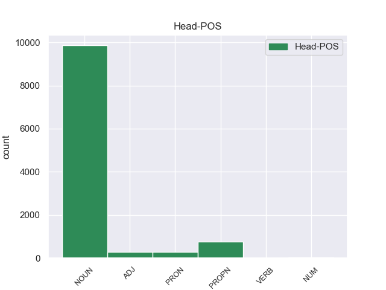
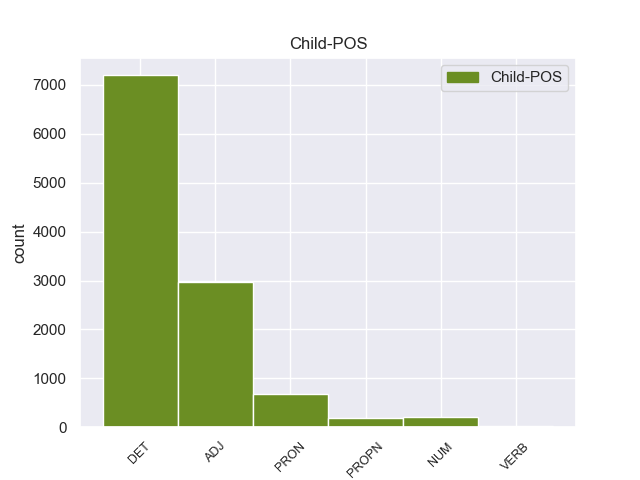

Distribution of features within this leaf



Agreement Rules sorted by frequency.
- When the dependent token is the determiner(det) of the head token, and the head token is DET and the dependent token is DET.
1 πρόκειται _ _ _ _ 0 _ _ _
2 για _ _ _ _ 0 _ _ _
3 αυτό _ _ _ _ 0 _ _ _
4 το _ _ _ _ 0 _ _ _
5 οποίο _ _ _ _ 0 _ _ _
6 αποκαλύφθηκε _ _ _ _ 0 _ _ _
7 κατά _ _ _ _ 0 _ _ _
8 τη _ _ _ _ 0 _ _ _
9 διάρκεια _ _ _ _ 0 _ _ _
10 αυτής _ _ _ _ 0 _ _ _
11 της _ _ _ _ 0 _ _ _
12 διαδικασίας _ _ _ _ 0 _ _ _
13 , _ _ _ _ 0 _ _ _
14 ότι _ _ _ _ 0 _ _ _
15 ο _ _ _ _ 0 _ _ _
16 Εισαγγελέας _ _ _ _ 0 _ _ _
17 κάποια _ _ _ _ 0 _ _ _
18 στιγμή _ _ _ _ 0 _ _ _
19 ζήτησε _ _ _ _ 0 _ _ _
20 από _ _ _ _ 0 _ _ _
21 την ο DET _ Case=Acc|Definite=Def|Gender=Fem|Number=Sing|PronType=Art 22 det _ _
22 Πρόεδρο πρόεδρο DET _ Case=Acc|Gender=Fem|Number=Sing 0 _ _ _
23 του _ _ _ _ 0 _ _ _
24 Σώματος _ _ _ _ 0 _ _ _
25 , _ _ _ _ 0 _ _ _
26 την _ _ _ _ 0 _ _ _
27 προκάτοχό _ _ _ _ 0 _ _ _
28 σας _ _ _ _ 0 _ _ _
29 , _ _ _ _ 0 _ _ _
30 λεπτομέρειες _ _ _ _ 0 _ _ _
31 για _ _ _ _ 0 _ _ _
32 την _ _ _ _ 0 _ _ _
33 ψήφο _ _ _ _ 0 _ _ _
34 που _ _ _ _ 0 _ _ _
35 έχουν _ _ _ _ 0 _ _ _
36 δώσει _ _ _ _ 0 _ _ _
37 οι _ _ _ _ 0 _ _ _
38 δύο _ _ _ _ 0 _ _ _
39 συγκεκριμένοι _ _ _ _ 0 _ _ _
40 βουλευτές _ _ _ _ 0 _ _ _
41 προκειμένου _ _ _ _ 0 _ _ _
42 να _ _ _ _ 0 _ _ _
43 διευκρινιστεί _ _ _ _ 0 _ _ _
44 περαιτέρω _ _ _ _ 0 _ _ _
45 η _ _ _ _ 0 _ _ _
46 πιθανότητα _ _ _ _ 0 _ _ _
47 να _ _ _ _ 0 _ _ _
48 είχαν _ _ _ _ 0 _ _ _
49 ασκήσει _ _ _ _ 0 _ _ _
50 αθέμιτη _ _ _ _ 0 _ _ _
51 επιρροή _ _ _ _ 0 _ _ _
52 . _ _ _ _ 0 _ _ _
1 πρόκειται _ _ _ _ 0 _ _ _
2 για _ _ _ _ 0 _ _ _
3 αυτό _ _ _ _ 0 _ _ _
4 το _ _ _ _ 0 _ _ _
5 οποίο _ _ _ _ 0 _ _ _
6 αποκαλύφθηκε _ _ _ _ 0 _ _ _
7 κατά _ _ _ _ 0 _ _ _
8 τη _ _ _ _ 0 _ _ _
9 διάρκεια _ _ _ _ 0 _ _ _
10 αυτής _ _ _ _ 0 _ _ _
11 της _ _ _ _ 0 _ _ _
12 διαδικασίας _ _ _ _ 0 _ _ _
13 , _ _ _ _ 0 _ _ _
14 ότι _ _ _ _ 0 _ _ _
15 ο _ _ _ _ 0 _ _ _
16 Εισαγγελέας εισαγγελέας ADJ _ Case=Gen|Gender=Fem|Number=Sing 0 _ _ _
17 κάποια _ _ _ _ 0 _ _ _
18 στιγμή _ _ _ _ 0 _ _ _
19 ζήτησε _ _ _ _ 0 _ _ _
20 από _ _ _ _ 0 _ _ _
21 την _ _ _ _ 0 _ _ _
22 Πρόεδρο _ _ _ _ 0 _ _ _
23 του ο DET _ Case=Gen|Definite=Def|Gender=Fem|Number=Sing|PronType=Art 16 det _ _
24 Σώματος _ _ _ _ 0 _ _ _
25 , _ _ _ _ 0 _ _ _
26 την _ _ _ _ 0 _ _ _
27 προκάτοχό _ _ _ _ 0 _ _ _
28 σας _ _ _ _ 0 _ _ _
29 , _ _ _ _ 0 _ _ _
30 λεπτομέρειες _ _ _ _ 0 _ _ _
31 για _ _ _ _ 0 _ _ _
32 την _ _ _ _ 0 _ _ _
33 ψήφο _ _ _ _ 0 _ _ _
34 που _ _ _ _ 0 _ _ _
35 έχουν _ _ _ _ 0 _ _ _
36 δώσει _ _ _ _ 0 _ _ _
37 οι _ _ _ _ 0 _ _ _
38 δύο _ _ _ _ 0 _ _ _
39 συγκεκριμένοι _ _ _ _ 0 _ _ _
40 βουλευτές _ _ _ _ 0 _ _ _
41 προκειμένου _ _ _ _ 0 _ _ _
42 να _ _ _ _ 0 _ _ _
43 διευκρινιστεί _ _ _ _ 0 _ _ _
44 περαιτέρω _ _ _ _ 0 _ _ _
45 η _ _ _ _ 0 _ _ _
46 πιθανότητα _ _ _ _ 0 _ _ _
47 να _ _ _ _ 0 _ _ _
48 είχαν _ _ _ _ 0 _ _ _
49 ασκήσει _ _ _ _ 0 _ _ _
50 αθέμιτη _ _ _ _ 0 _ _ _
51 επιρροή _ _ _ _ 0 _ _ _
52 . _ _ _ _ 0 _ _ _
1 Σ _ _ _ _ 0 _ _ _
2 την ο DET _ Case=Acc|Definite=Def|Gender=Fem|Number=Sing|PronType=Art 8 det _ _
3 παρούσα _ _ _ _ 0 _ _ _
4 μορφή _ _ _ _ 0 _ _ _
5 της _ _ _ _ 0 _ _ _
6 , _ _ _ _ 0 _ _ _
7 η _ _ _ _ 0 _ _ _
8 αίτηση ο VERB _ Case=Acc|Gender=Fem|Number=Sing 0 _ _ _
9 άρσης _ _ _ _ 0 _ _ _
10 της _ _ _ _ 0 _ _ _
11 ασυλίας _ _ _ _ 0 _ _ _
12 παρουσιάζεται _ _ _ _ 0 _ _ _
13 απαράδεκτα _ _ _ _ 0 _ _ _
14 ασαφής _ _ _ _ 0 _ _ _
15 . _ _ _ _ 0 _ _ _
1 Ως _ _ _ _ 0 _ _ _
2 αποτέλεσμα _ _ _ _ 0 _ _ _
3 αυτών _ _ _ _ 0 _ _ _
4 των _ _ _ _ 0 _ _ _
5 συνθηκών _ _ _ _ 0 _ _ _
6 η _ _ _ _ 0 _ _ _
7 Ελλάδα _ _ _ _ 0 _ _ _
8 προσάρτησε προσάρτησε VERB _ Case=Acc|Gender=Fem|Number=Sing 0 _ _ _
9 ( _ _ _ _ 0 _ _ _
10 προσωρινά προσωρινά DET _ Case=Acc|Gender=Fem|Number=Sing 8 obl _ _
11 ) _ _ _ _ 0 _ _ _
12 την _ _ _ _ 0 _ _ _
13 Ανατολική _ _ _ _ 0 _ _ _
14 Θράκη _ _ _ _ 0 _ _ _
15 και _ _ _ _ 0 _ _ _
16 την _ _ _ _ 0 _ _ _
17 Σμύρνη _ _ _ _ 0 _ _ _
18 . _ _ _ _ 0 _ _ _
1 Τα _ _ _ _ 0 _ _ _
2 καταπράσινα _ _ _ _ 0 _ _ _
3 νησάκια _ _ _ _ 0 _ _ _
4 Άγιος _ _ _ _ 0 _ _ _
5 Νικόλαος _ _ _ _ 0 _ _ _
6 και _ _ _ _ 0 _ _ _
7 Μαύρον _ _ _ _ 0 _ _ _
8 Όρος _ _ _ _ 0 _ _ _
9 - _ _ _ _ 0 _ _ _
10 όπου _ _ _ _ 0 _ _ _
11 και _ _ _ _ 0 _ _ _
12 χτίστηκε _ _ _ _ 0 _ _ _
13 το _ _ _ _ 0 _ _ _
14 1884 _ _ _ _ 0 _ _ _
15 φάρος _ _ _ _ 0 _ _ _
16 για _ _ _ _ 0 _ _ _
17 τη _ _ _ _ 0 _ _ _
18 διευκόλυνση _ _ _ _ 0 _ _ _
19 της _ _ _ _ 0 _ _ _
20 ακτοπλοΐας _ _ _ _ 0 _ _ _
21 - _ _ _ _ 0 _ _ _
22 που _ _ _ _ 0 _ _ _
23 περιστοιχίζουν περιστοιχίζουν VERB _ Case=Acc|Gender=Fem|Number=Sing 0 _ _ _
24 το _ _ _ _ 0 _ _ _
25 χωριό _ _ _ _ 0 _ _ _
26 είναι _ _ _ _ 0 _ _ _
27 προσβάσιμα _ _ _ _ 0 _ _ _
28 με _ _ _ _ 0 _ _ _
29 βάρκα _ _ _ _ 0 _ _ _
30 ενώ _ _ _ _ 0 _ _ _
31 οι _ _ _ _ 0 _ _ _
32 παραλίες παραλίες ADJ _ Case=Acc|Gender=Fem|Number=Sing 23 obl _ _
33 που _ _ _ _ 0 _ _ _
34 προσφέρονται _ _ _ _ 0 _ _ _
35 για _ _ _ _ 0 _ _ _
36 κολύμπι _ _ _ _ 0 _ _ _
37 είναι _ _ _ _ 0 _ _ _
38 πολλές _ _ _ _ 0 _ _ _
39 και _ _ _ _ 0 _ _ _
40 πεντακάθαρες _ _ _ _ 0 _ _ _
41 : _ _ _ _ 0 _ _ _
1 Έχουμε _ _ _ _ 0 _ _ _
2 την _ _ _ _ 0 _ _ _
3 απαρέγκλιτη _ _ _ _ 0 _ _ _
4 αρχή _ _ _ _ 0 _ _ _
5 να _ _ _ _ 0 _ _ _
6 μην _ _ _ _ 0 _ _ _
7 διαμορφώνουμε _ _ _ _ 0 _ _ _
8 οποιαδήποτε _ _ _ _ 0 _ _ _
9 γνώμη _ _ _ _ 0 _ _ _
10 σχετικά _ _ _ _ 0 _ _ _
11 με _ _ _ _ 0 _ _ _
12 την _ _ _ _ 0 _ _ _
13 ουσία _ _ _ _ 0 _ _ _
14 των _ _ _ _ 0 _ _ _
15 κατηγοριών _ _ _ _ 0 _ _ _
16 , _ _ _ _ 0 _ _ _
17 αλλά _ _ _ _ 0 _ _ _
18 να _ _ _ _ 0 _ _ _
19 θεωρούμε θεωρούμε VERB _ Case=Gen|Gender=Fem|Number=Sing 0 _ _ _
20 ότι _ _ _ _ 0 _ _ _
21 οι _ _ _ _ 0 _ _ _
22 βουλευτές βουλευτές VERB _ Case=Gen|Gender=Fem|Number=Sing 19 obl _ _
23 απολαύουν _ _ _ _ 0 _ _ _
24 του _ _ _ _ 0 _ _ _
25 τεκμηρίου _ _ _ _ 0 _ _ _
26 της _ _ _ _ 0 _ _ _
27 αθωότητας _ _ _ _ 0 _ _ _
28 . _ _ _ _ 0 _ _ _
1 Όλοι _ _ _ _ 0 _ _ _
2 οι _ _ _ _ 0 _ _ _
3 κρατούμενοι _ _ _ _ 0 _ _ _
4 φέρονται φέρονται DET _ Case=Gen|Gender=Fem|Number=Sing 0 _ _ _
5 ως _ _ _ _ 0 _ _ _
6 μέλη _ _ _ _ 0 _ _ _
7 της _ _ _ _ 0 _ _ _
8 Αλ αλ DET _ Case=Gen|Gender=Fem|Number=Sing 4 amod _ _
9 Κάιντα _ _ _ _ 0 _ _ _
10 , _ _ _ _ 0 _ _ _
11 ενώ _ _ _ _ 0 _ _ _
12 δύο _ _ _ _ 0 _ _ _
13 απ' _ _ _ _ 0 _ _ _
14 αυτούς _ _ _ _ 0 _ _ _
15 είναι _ _ _ _ 0 _ _ _
16 θανατοποινίτες _ _ _ _ 0 _ _ _
17 . _ _ _ _ 0 _ _ _
1 Τα _ _ _ _ 0 _ _ _
2 εγκλήματα εγκλήματα NOUN _ Case=Acc|Gender=Fem|Number=Sing 15 obl _ _
3 είναι _ _ _ _ 0 _ _ _
4 σοβαρά _ _ _ _ 0 _ _ _
5 και _ _ _ _ 0 _ _ _
6 ανήκουν _ _ _ _ 0 _ _ _
7 σε _ _ _ _ 0 _ _ _
8 μια _ _ _ _ 0 _ _ _
9 κατηγορία _ _ _ _ 0 _ _ _
10 για _ _ _ _ 0 _ _ _
11 την _ _ _ _ 0 _ _ _
12 οποία _ _ _ _ 0 _ _ _
13 κανονικά _ _ _ _ 0 _ _ _
14 δεν _ _ _ _ 0 _ _ _
15 προσφέρεται προσφέρεται VERB _ Case=Acc|Gender=Fem|Number=Sing 0 _ _ _
16 βουλευτική _ _ _ _ 0 _ _ _
17 ασυλία _ _ _ _ 0 _ _ _
18 , _ _ _ _ 0 _ _ _
19 επειδή _ _ _ _ 0 _ _ _
20 δεν _ _ _ _ 0 _ _ _
21 αφορούν _ _ _ _ 0 _ _ _
22 τις _ _ _ _ 0 _ _ _
23 συνήθεις _ _ _ _ 0 _ _ _
24 και _ _ _ _ 0 _ _ _
25 προσήκουσες _ _ _ _ 0 _ _ _
26 δραστηριότητες _ _ _ _ 0 _ _ _
27 βουλευτή _ _ _ _ 0 _ _ _
28 του _ _ _ _ 0 _ _ _
29 Σώματος _ _ _ _ 0 _ _ _
30 , _ _ _ _ 0 _ _ _
31 ή _ _ _ _ 0 _ _ _
32 πολιτικού _ _ _ _ 0 _ _ _
33 που _ _ _ _ 0 _ _ _
34 δραστηριοποιείται _ _ _ _ 0 _ _ _
35 σε _ _ _ _ 0 _ _ _
36 μια _ _ _ _ 0 _ _ _
37 δημοκρατική _ _ _ _ 0 _ _ _
38 κοινωνία _ _ _ _ 0 _ _ _
39 . _ _ _ _ 0 _ _ _
1 Τόσο _ _ _ _ 0 _ _ _
2 το _ _ _ _ 0 _ _ _
3 ζήτημα ζήτημα ADP _ Case=Gen|Gender=Fem|Number=Sing 0 _ _ _
4 της _ _ _ _ 0 _ _ _
5 ασυλίας _ _ _ _ 0 _ _ _
6 όσο _ _ _ _ 0 _ _ _
7 και _ _ _ _ 0 _ _ _
8 η _ _ _ _ 0 _ _ _
9 αίτηση _ _ _ _ 0 _ _ _
10 για _ _ _ _ 0 _ _ _
11 άρση _ _ _ _ 0 _ _ _
12 της ο DET _ Case=Gen|Definite=Def|Gender=Fem|Number=Sing|PronType=Art 3 det _ _
13 έχουν _ _ _ _ 0 _ _ _
14 σχέση _ _ _ _ 0 _ _ _
15 μόνο _ _ _ _ 0 _ _ _
16 με _ _ _ _ 0 _ _ _
17 το _ _ _ _ 0 _ _ _
18 εάν _ _ _ _ 0 _ _ _
19 το _ _ _ _ 0 _ _ _
20 Δικαστήριο _ _ _ _ 0 _ _ _
21 μπορεί _ _ _ _ 0 _ _ _
22 να _ _ _ _ 0 _ _ _
23 εκδώσει _ _ _ _ 0 _ _ _
24 δεσμευτικά _ _ _ _ 0 _ _ _
25 βουλεύματα _ _ _ _ 0 _ _ _
26 για _ _ _ _ 0 _ _ _
27 τον _ _ _ _ 0 _ _ _
28 περιορισμό _ _ _ _ 0 _ _ _
29 της _ _ _ _ 0 _ _ _
30 ελεύθερης _ _ _ _ 0 _ _ _
31 μετακίνησης _ _ _ _ 0 _ _ _
32 των _ _ _ _ 0 _ _ _
33 βουλευτών _ _ _ _ 0 _ _ _
34 του _ _ _ _ 0 _ _ _
35 Ευρωπαϊκού _ _ _ _ 0 _ _ _
36 Κοινοβουλίου _ _ _ _ 0 _ _ _
37 ή _ _ _ _ 0 _ _ _
38 την _ _ _ _ 0 _ _ _
39 ελευθερία _ _ _ _ 0 _ _ _
40 τους _ _ _ _ 0 _ _ _
41 να _ _ _ _ 0 _ _ _
42 έρχονται _ _ _ _ 0 _ _ _
43 σε _ _ _ _ 0 _ _ _
44 επικοινωνία _ _ _ _ 0 _ _ _
45 με _ _ _ _ 0 _ _ _
46 άλλα _ _ _ _ 0 _ _ _
47 πρόσωπα _ _ _ _ 0 _ _ _
48 . _ _ _ _ 0 _ _ _
1 Τελευταίο _ _ _ _ 0 _ _ _
2 , _ _ _ _ 0 _ _ _
3 αλλά _ _ _ _ 0 _ _ _
4 όχι _ _ _ _ 0 _ _ _
5 λιγότερο _ _ _ _ 0 _ _ _
6 σημαντικό _ _ _ _ 0 _ _ _
7 , _ _ _ _ 0 _ _ _
8 το _ _ _ _ 0 _ _ _
9 γενικό _ _ _ _ 0 _ _ _
10 καθεστώς _ _ _ _ 0 _ _ _
11 δεν _ _ _ _ 0 _ _ _
12 προσφέρει προσφέρει VERB _ Case=Acc|Gender=Fem|Number=Sing 0 _ _ _
13 διατάξεις _ _ _ _ 0 _ _ _
14 που _ _ _ _ 0 _ _ _
15 είναι _ _ _ _ 0 _ _ _
16 ζωτικής _ _ _ _ 0 _ _ _
17 σημασίας _ _ _ _ 0 _ _ _
18 σ _ _ _ _ 0 _ _ _
19 τον _ _ _ _ 0 _ _ _
20 τομέα _ _ _ _ 0 _ _ _
21 του _ _ _ _ 0 _ _ _
22 αυτοκινήτου _ _ _ _ 0 _ _ _
23 για _ _ _ _ 0 _ _ _
24 να _ _ _ _ 0 _ _ _
25 διασφαλίσει _ _ _ _ 0 _ _ _
26 τα _ _ _ _ 0 _ _ _
27 οφέλη _ _ _ _ 0 _ _ _
28 για _ _ _ _ 0 _ _ _
29 τον _ _ _ _ 0 _ _ _
30 καταναλωτή καταναλωτή DET _ Case=Acc|Gender=Fem|Number=Sing 12 amod _ _
31 . _ _ _ _ 0 _ _ _
1 Θυμίζουμε _ _ _ _ 0 _ _ _
2 ότι _ _ _ _ 0 _ _ _
3 ο _ _ _ _ 0 _ _ _
4 Βλαντιμίρ _ _ _ _ 0 _ _ _
5 Πούτιν _ _ _ _ 0 _ _ _
6 κέρδισε _ _ _ _ 0 _ _ _
7 τις _ _ _ _ 0 _ _ _
8 προεδρικές _ _ _ _ 0 _ _ _
9 εκλογές εκλογές DET _ Case=Acc|Gender=Fem|Number=Sing 13 obl _ _
10 της _ _ _ _ 0 _ _ _
11 Ρωσίας _ _ _ _ 0 _ _ _
12 με _ _ _ _ 0 _ _ _
13 ποσοστό ποσοστό DET _ Case=Acc|Gender=Fem|Number=Sing 0 _ _ _
14 65.3% _ _ _ _ 0 _ _ _
15 . _ _ _ _ 0 _ _ _
1 Ο _ _ _ _ 0 _ _ _
2 Πρόεδρος _ _ _ _ 0 _ _ _
3 της _ _ _ _ 0 _ _ _
4 Ευρωπαϊκής ευρωπαϊκής ADJ _ Case=Gen|Gender=Fem|Number=Sing 5 amod _ _
5 Επιτροπής επιτροπής DET _ Case=Gen|Gender=Fem|Number=Sing 0 _ _ _
6 , _ _ _ _ 0 _ _ _
7 Μανουέλ _ _ _ _ 0 _ _ _
8 Μπαρόζο _ _ _ _ 0 _ _ _
9 , _ _ _ _ 0 _ _ _
10 και _ _ _ _ 0 _ _ _
11 ο _ _ _ _ 0 _ _ _
12 Επικεφαλής _ _ _ _ 0 _ _ _
13 των _ _ _ _ 0 _ _ _
14 Φιλελεύθερων _ _ _ _ 0 _ _ _
15 του _ _ _ _ 0 _ _ _
16 Ευρωκοινοβουλίου _ _ _ _ 0 _ _ _
17 και _ _ _ _ 0 _ _ _
18 πρώην _ _ _ _ 0 _ _ _
19 Πρωθυπουργός _ _ _ _ 0 _ _ _
20 του _ _ _ _ 0 _ _ _
21 Βελγίου _ _ _ _ 0 _ _ _
22 , _ _ _ _ 0 _ _ _
23 Γκι _ _ _ _ 0 _ _ _
24 Φέρχοφστατ _ _ _ _ 0 _ _ _
25 , _ _ _ _ 0 _ _ _
26 εξέφρασαν _ _ _ _ 0 _ _ _
27 τα _ _ _ _ 0 _ _ _
28 συλληπήτηρια _ _ _ _ 0 _ _ _
29 τους _ _ _ _ 0 _ _ _
30 σ _ _ _ _ 0 _ _ _
31 τις _ _ _ _ 0 _ _ _
32 οικογένειες _ _ _ _ 0 _ _ _
33 των _ _ _ _ 0 _ _ _
34 θυμάτων _ _ _ _ 0 _ _ _
35 . _ _ _ _ 0 _ _ _
1 Σ _ _ _ _ 0 _ _ _
2 το _ _ _ _ 0 _ _ _
3 Βιετνάμ _ _ _ _ 0 _ _ _
4 , _ _ _ _ 0 _ _ _
5 έχουν _ _ _ _ 0 _ _ _
6 πεθάνει _ _ _ _ 0 _ _ _
7 περισσότερα _ _ _ _ 0 _ _ _
8 από _ _ _ _ 0 _ _ _
9 1,5 _ _ _ _ 0 _ _ _
10 εκατομμύρια _ _ _ _ 0 _ _ _
11 πουλερικά _ _ _ _ 0 _ _ _
12 εξαιτίας _ _ _ _ 0 _ _ _
13 της _ _ _ _ 0 _ _ _
14 ασθένειας _ _ _ _ 0 _ _ _
15 , _ _ _ _ 0 _ _ _
16 ενώ _ _ _ _ 0 _ _ _
17 κρούσματα _ _ _ _ 0 _ _ _
18 έχουν _ _ _ _ 0 _ _ _
19 εμφανιστεί _ _ _ _ 0 _ _ _
20 σ _ _ _ _ 0 _ _ _
21 τις _ _ _ _ 0 _ _ _
22 35 _ _ _ _ 0 _ _ _
23 από _ _ _ _ 0 _ _ _
24 τις _ _ _ _ 0 _ _ _
25 64 ο ADJ _ Case=Acc|Gender=Fem|Number=Sing 28 amod _ _
26 πόλεις _ _ _ _ 0 _ _ _
27 και _ _ _ _ 0 _ _ _
28 επαρχίες επαρχίες ADJ _ Case=Acc|Gender=Fem|Number=Sing 0 _ _ _
29 . _ _ _ _ 0 _ _ _
1 Οι _ _ _ _ 0 _ _ _
2 Αρχές αρχές DET _ Case=Gen|Gender=Fem|Number=Sing 0 _ _ _
3 της _ _ _ _ 0 _ _ _
4 Μισουράτας _ _ _ _ 0 _ _ _
5 ( _ _ _ _ 0 _ _ _
6 ή ή NOUN _ Case=Gen|Definite=Def|Gender=Fem|Number=Sing|PronType=Art 2 det _ _
7 Μισράτας _ _ _ _ 0 _ _ _
8 ) _ _ _ _ 0 _ _ _
9 , _ _ _ _ 0 _ _ _
10 της _ _ _ _ 0 _ _ _
11 τρίτης _ _ _ _ 0 _ _ _
12 μεγαλύτερης _ _ _ _ 0 _ _ _
13 πόλης _ _ _ _ 0 _ _ _
14 σ _ _ _ _ 0 _ _ _
15 τη _ _ _ _ 0 _ _ _
16 Λιβύη _ _ _ _ 0 _ _ _
17 , _ _ _ _ 0 _ _ _
18 εξέφρασαν _ _ _ _ 0 _ _ _
19 την _ _ _ _ 0 _ _ _
20 επιθυμία _ _ _ _ 0 _ _ _
21 τους _ _ _ _ 0 _ _ _
22 για _ _ _ _ 0 _ _ _
23 καθεστώς _ _ _ _ 0 _ _ _
24 ημιαυτονομίας _ _ _ _ 0 _ _ _
25 . _ _ _ _ 0 _ _ _
1 Σ _ _ _ _ 0 _ _ _
2 το _ _ _ _ 0 _ _ _
3 δεύτερο δεύτερο ADP _ Case=Acc|Gender=Masc|Number=Sing 7 obl _ _
4 , _ _ _ _ 0 _ _ _
5 οι _ _ _ _ 0 _ _ _
6 Ρώσοι _ _ _ _ 0 _ _ _
7 προσπάθησαν προσπάθησαν VERB _ Case=Acc|Gender=Fem|Number=Sing 0 _ _ _
8 να _ _ _ _ 0 _ _ _
9 ισοφαρίσουν _ _ _ _ 0 _ _ _
10 , _ _ _ _ 0 _ _ _
11 αλλά _ _ _ _ 0 _ _ _
12 ένα _ _ _ _ 0 _ _ _
13 λεπτό _ _ _ _ 0 _ _ _
14 πριν _ _ _ _ 0 _ _ _
15 τη _ _ _ _ 0 _ _ _
16 λήξη _ _ _ _ 0 _ _ _
17 ο _ _ _ _ 0 _ _ _
18 Ολιβέιρα _ _ _ _ 0 _ _ _
19 σκόραρε _ _ _ _ 0 _ _ _
20 το _ _ _ _ 0 _ _ _
21 δεύτερο _ _ _ _ 0 _ _ _
22 γκολ _ _ _ _ 0 _ _ _
23 των _ _ _ _ 0 _ _ _
24 Πορτογάλων _ _ _ _ 0 _ _ _
25 . _ _ _ _ 0 _ _ _
1 Αυτό _ _ _ _ 0 _ _ _
2 συμβαίνει _ _ _ _ 0 _ _ _
3 με _ _ _ _ 0 _ _ _
4 την _ _ _ _ 0 _ _ _
5 αποκαλούμενη _ _ _ _ 0 _ _ _
6 ρήτρα ρήτρα VERB _ Case=Gen|Gender=Fem|Number=Sing 0 _ _ _
7 διαθεσιμότητας _ _ _ _ 0 _ _ _
8 , _ _ _ _ 0 _ _ _
9 που _ _ _ _ 0 _ _ _
10 επιτρέπει _ _ _ _ 0 _ _ _
11 , _ _ _ _ 0 _ _ _
12 για _ _ _ _ 0 _ _ _
13 παράδειγμα _ _ _ _ 0 _ _ _
14 , _ _ _ _ 0 _ _ _
15 σε _ _ _ _ 0 _ _ _
16 ένα _ _ _ _ 0 _ _ _
17 βρετανό _ _ _ _ 0 _ _ _
18 καταναλωτή _ _ _ _ 0 _ _ _
19 να _ _ _ _ 0 _ _ _
20 αγοράσει _ _ _ _ 0 _ _ _
21 ένα _ _ _ _ 0 _ _ _
22 αυτοκίνητο ο ADJ _ Case=Gen|Gender=Fem|Number=Sing 6 amod _ _
23 με _ _ _ _ 0 _ _ _
24 δεξιόστροφη _ _ _ _ 0 _ _ _
25 λήψη _ _ _ _ 0 _ _ _
26 κίνησης _ _ _ _ 0 _ _ _
27 σε _ _ _ _ 0 _ _ _
28 μια _ _ _ _ 0 _ _ _
29 χώρα _ _ _ _ 0 _ _ _
30 όπου _ _ _ _ 0 _ _ _
31 οδηγούν _ _ _ _ 0 _ _ _
32 αριστερά _ _ _ _ 0 _ _ _
33 . _ _ _ _ 0 _ _ _
1 Ο _ _ _ _ 0 _ _ _
2 Σνόουντεν _ _ _ _ 0 _ _ _
3 ζητά _ _ _ _ 0 _ _ _
4 προσωρινό _ _ _ _ 0 _ _ _
5 άσυλο άσυλο ADJ _ Case=Gen|Gender=Fem|Number=Sing 0 _ _ _
6 σ _ _ _ _ 0 _ _ _
7 τη _ _ _ _ 0 _ _ _
8 Ρωσία ρωσία DET _ Case=Gen|Gender=Fem|Number=Sing 5 amod _ _
9 . _ _ _ _ 0 _ _ _
1 Περισσότεροι _ _ _ _ 0 _ _ _
2 από _ _ _ _ 0 _ _ _
3 15.000 _ _ _ _ 0 _ _ _
4 τόνοι _ _ _ _ 0 _ _ _
5 πατάτας πατάτας VERB _ Case=Acc|Gender=Fem|Number=Sing 9 amod _ _
6 διατέθηκαν _ _ _ _ 0 _ _ _
7 σ _ _ _ _ 0 _ _ _
8 την _ _ _ _ 0 _ _ _
9 αγορά ο VERB _ Case=Acc|Gender=Fem|Number=Sing 0 _ _ _
10 μόνο _ _ _ _ 0 _ _ _
11 από _ _ _ _ 0 _ _ _
12 το _ _ _ _ 0 _ _ _
13 λεκανοπέδιο _ _ _ _ 0 _ _ _
14 του _ _ _ _ 0 _ _ _
15 Νευροκοπίου _ _ _ _ 0 _ _ _
16 , _ _ _ _ 0 _ _ _
17 σύμφωνα _ _ _ _ 0 _ _ _
18 με _ _ _ _ 0 _ _ _
19 υπολογισμούς _ _ _ _ 0 _ _ _
20 από _ _ _ _ 0 _ _ _
21 τη _ _ _ _ 0 _ _ _
22 στιγμή _ _ _ _ 0 _ _ _
23 που _ _ _ _ 0 _ _ _
24 ξεκίνησε _ _ _ _ 0 _ _ _
25 το _ _ _ _ 0 _ _ _
26 « _ _ _ _ 0 _ _ _
27 κίνημα _ _ _ _ 0 _ _ _
28 της _ _ _ _ 0 _ _ _
29 πατάτας _ _ _ _ 0 _ _ _
30 » _ _ _ _ 0 _ _ _
31 - _ _ _ _ 0 _ _ _
32 πριν _ _ _ _ 0 _ _ _
33 από _ _ _ _ 0 _ _ _
34 έναν _ _ _ _ 0 _ _ _
35 μήνα _ _ _ _ 0 _ _ _
36 περίπου _ _ _ _ 0 _ _ _
37 - _ _ _ _ 0 _ _ _
38 μέχρι _ _ _ _ 0 _ _ _
39 σήμερα _ _ _ _ 0 _ _ _
40 . _ _ _ _ 0 _ _ _
1 Ο _ _ _ _ 0 _ _ _
2 βιότοπος _ _ _ _ 0 _ _ _
3 των _ _ _ _ 0 _ _ _
4 Κουκουναριών _ _ _ _ 0 _ _ _
5 είναι _ _ _ _ 0 _ _ _
6 ένας _ _ _ _ 0 _ _ _
7 από _ _ _ _ 0 _ _ _
8 τους _ _ _ _ 0 _ _ _
9 τρεις τρεις ADJ _ Case=Acc|Gender=Fem|Number=Sing 12 det _ _
10 σημαντικότερους _ _ _ _ 0 _ _ _
11 της _ _ _ _ 0 _ _ _
12 χώρας χώρας DET _ Case=Acc|Gender=Fem|Number=Sing 0 _ _ _
13 . _ _ _ _ 0 _ _ _
1 Υποστήριξε _ _ _ _ 0 _ _ _
2 πως _ _ _ _ 0 _ _ _
3 τα _ _ _ _ 0 _ _ _
4 ανθρώπινα _ _ _ _ 0 _ _ _
5 δικαιώματα _ _ _ _ 0 _ _ _
6 των _ _ _ _ 0 _ _ _
7 Θιβετιανών _ _ _ _ 0 _ _ _
8 παραβιάζονται παραβιάζονται VERB _ Case=Acc|Gender=Fem|Number=Sing 0 _ _ _
9 μέσω _ _ _ _ 0 _ _ _
10 διακρίσεων _ _ _ _ 0 _ _ _
11 , _ _ _ _ 0 _ _ _
12 σε _ _ _ _ 0 _ _ _
13 εφαρμογή _ _ _ _ 0 _ _ _
14 μιας _ _ _ _ 0 _ _ _
15 πολιτικής πολιτικής DET _ Case=Acc|Gender=Fem|Number=Sing 8 nsubj _ _
16 που _ _ _ _ 0 _ _ _
17 οι _ _ _ _ 0 _ _ _
18 Κινέζοι _ _ _ _ 0 _ _ _
19 αποκαλούν _ _ _ _ 0 _ _ _
20 " _ _ _ _ 0 _ _ _
21 διαχωρισμός _ _ _ _ 0 _ _ _
22 και _ _ _ _ 0 _ _ _
23 αφομοίωση _ _ _ _ 0 _ _ _
24 " _ _ _ _ 0 _ _ _
25 . _ _ _ _ 0 _ _ _
1 Όταν _ _ _ _ 0 _ _ _
2 η _ _ _ _ 0 _ _ _
3 Γερμανία _ _ _ _ 0 _ _ _
4 υπέγραψε _ _ _ _ 0 _ _ _
5 ανακωχή _ _ _ _ 0 _ _ _
6 , _ _ _ _ 0 _ _ _
7 συνήλθε _ _ _ _ 0 _ _ _
8 σ _ _ _ _ 0 _ _ _
9 το _ _ _ _ 0 _ _ _
10 Παρίσι _ _ _ _ 0 _ _ _
11 η _ _ _ _ 0 _ _ _
12 συνδιάσκεψη _ _ _ _ 0 _ _ _
13 της _ _ _ _ 0 _ _ _
14 ειρήνης _ _ _ _ 0 _ _ _
15 , _ _ _ _ 0 _ _ _
16 όπου _ _ _ _ 0 _ _ _
17 ο _ _ _ _ 0 _ _ _
18 Βενιζέλος _ _ _ _ 0 _ _ _
19 παρέστη παρέστη VERB _ Case=Acc|Gender=Fem|Number=Sing 0 _ _ _
20 ως _ _ _ _ 0 _ _ _
21 αντιπρόσωπος _ _ _ _ 0 _ _ _
22 της _ _ _ _ 0 _ _ _
23 Ελλάδας _ _ _ _ 0 _ _ _
24 και _ _ _ _ 0 _ _ _
25 πρόβαλε _ _ _ _ 0 _ _ _
26 τις _ _ _ _ 0 _ _ _
27 αξιώσεις _ _ _ _ 0 _ _ _
28 της _ _ _ _ 0 _ _ _
29 χώρας χώρας DET _ Case=Acc|Gender=Fem|Number=Sing 19 obj _ _
30 μας _ _ _ _ 0 _ _ _
31 , _ _ _ _ 0 _ _ _
32 οι _ _ _ _ 0 _ _ _
33 οποίες _ _ _ _ 0 _ _ _
34 έγιναν _ _ _ _ 0 _ _ _
35 σ _ _ _ _ 0 _ _ _
36 το _ _ _ _ 0 _ _ _
37 σύνολό _ _ _ _ 0 _ _ _
38 τους _ _ _ _ 0 _ _ _
39 δεκτές _ _ _ _ 0 _ _ _
40 με _ _ _ _ 0 _ _ _
41 τις _ _ _ _ 0 _ _ _
42 συνθήκες _ _ _ _ 0 _ _ _
43 του _ _ _ _ 0 _ _ _
44 Νεϊγύ _ _ _ _ 0 _ _ _
45 ( _ _ _ _ 0 _ _ _
46 27_Νοεμβρίου_1919 _ _ _ _ 0 _ _ _
47 ) _ _ _ _ 0 _ _ _
48 και _ _ _ _ 0 _ _ _
49 των _ _ _ _ 0 _ _ _
50 Σεβρών _ _ _ _ 0 _ _ _
51 ( _ _ _ _ 0 _ _ _
52 10_Αυγούστου_1920 _ _ _ _ 0 _ _ _
53 ) _ _ _ _ 0 _ _ _
54 . _ _ _ _ 0 _ _ _
1 Σ _ _ _ _ 0 _ _ _
2 τις _ _ _ _ 0 _ _ _
3 μεγάλες ο ADJ _ Case=Acc|Gender=Neut|Number=Sing 6 det _ _
4 πόλεις _ _ _ _ 0 _ _ _
5 κύρια _ _ _ _ 0 _ _ _
6 αιτία ο VERB _ Case=Acc|Gender=Fem|Number=Sing 0 _ _ _
7 είναι _ _ _ _ 0 _ _ _
8 η _ _ _ _ 0 _ _ _
9 απομόνωση _ _ _ _ 0 _ _ _
10 ενώ _ _ _ _ 0 _ _ _
11 σ _ _ _ _ 0 _ _ _
12 τις _ _ _ _ 0 _ _ _
13 μικρότερες _ _ _ _ 0 _ _ _
14 είναι _ _ _ _ 0 _ _ _
15 οι _ _ _ _ 0 _ _ _
16 αυστηροί _ _ _ _ 0 _ _ _
17 κανόνες _ _ _ _ 0 _ _ _
18 » _ _ _ _ 0 _ _ _
19 . _ _ _ _ 0 _ _ _
1 Σ _ _ _ _ 0 _ _ _
2 τις _ _ _ _ 0 _ _ _
3 μεγάλες _ _ _ _ 0 _ _ _
4 πόλεις _ _ _ _ 0 _ _ _
5 κύρια _ _ _ _ 0 _ _ _
6 αιτία ο VERB _ Case=Acc|Gender=Fem|Number=Sing 0 _ _ _
7 είναι _ _ _ _ 0 _ _ _
8 η _ _ _ _ 0 _ _ _
9 απομόνωση _ _ _ _ 0 _ _ _
10 ενώ _ _ _ _ 0 _ _ _
11 σ _ _ _ _ 0 _ _ _
12 τις _ _ _ _ 0 _ _ _
13 μικρότερες Μικρότερες NOUN _ Case=Acc|Gender=Neut|Number=Sing 6 amod _ _
14 είναι _ _ _ _ 0 _ _ _
15 οι _ _ _ _ 0 _ _ _
16 αυστηροί _ _ _ _ 0 _ _ _
17 κανόνες _ _ _ _ 0 _ _ _
18 » _ _ _ _ 0 _ _ _
19 . _ _ _ _ 0 _ _ _
1 Σ _ _ _ _ 0 _ _ _
2 την _ _ _ _ 0 _ _ _
3 ηρεμία _ _ _ _ 0 _ _ _
4 της _ _ _ _ 0 _ _ _
5 νύχτας _ _ _ _ 0 _ _ _
6 , _ _ _ _ 0 _ _ _
7 ο _ _ _ _ 0 _ _ _
8 Εγκέλαδος _ _ _ _ 0 _ _ _
9 σκόρπισε _ _ _ _ 0 _ _ _
10 το _ _ _ _ 0 _ _ _
11 θάνατο θάνατο ADP _ Case=Acc|Gender=Neut|Number=Sing 19 det _ _
12 και _ _ _ _ 0 _ _ _
13 τον _ _ _ _ 0 _ _ _
14 πανικό _ _ _ _ 0 _ _ _
15 , _ _ _ _ 0 _ _ _
16 σείοντας _ _ _ _ 0 _ _ _
17 άγρια _ _ _ _ 0 _ _ _
18 την _ _ _ _ 0 _ _ _
19 επαρχία επαρχία DET _ Case=Acc|Gender=Fem|Number=Sing 0 _ _ _
20 του _ _ _ _ 0 _ _ _
21 Αμπρούτζο _ _ _ _ 0 _ _ _
22 , _ _ _ _ 0 _ _ _
23 αλλά _ _ _ _ 0 _ _ _
24 και _ _ _ _ 0 _ _ _
25 ολόκληρη _ _ _ _ 0 _ _ _
26 τη _ _ _ _ 0 _ _ _
27 χώρα _ _ _ _ 0 _ _ _
28 . _ _ _ _ 0 _ _ _
1 Σ _ _ _ _ 0 _ _ _
2 τις _ _ _ _ 0 _ _ _
3 25_Ιουλίου_1974 _ _ _ _ 0 _ _ _
4 άρχισαν _ _ _ _ 0 _ _ _
5 σ _ _ _ _ 0 _ _ _
6 την _ _ _ _ 0 _ _ _
7 Γενεύη _ _ _ _ 0 _ _ _
8 οι _ _ _ _ 0 _ _ _
9 ειρηνευτικές _ _ _ _ 0 _ _ _
10 συνομιλίες _ _ _ _ 0 _ _ _
11 για _ _ _ _ 0 _ _ _
12 την _ _ _ _ 0 _ _ _
13 Κύπρο _ _ _ _ 0 _ _ _
14 , _ _ _ _ 0 _ _ _
15 μεταξύ _ _ _ _ 0 _ _ _
16 των _ _ _ _ 0 _ _ _
17 Υπουργών _ _ _ _ 0 _ _ _
18 Εξωτερικών _ _ _ _ 0 _ _ _
19 των _ _ _ _ 0 _ _ _
20 τριών τριών ADJ _ Case=Acc|Gender=Fem|Number=Sing 22 det _ _
21 εγγυητριών _ _ _ _ 0 _ _ _
22 χωρών χωρών ADJ _ Case=Acc|Gender=Fem|Number=Sing 0 _ _ _
23 της _ _ _ _ 0 _ _ _
24 Κυπριακής _ _ _ _ 0 _ _ _
25 Ανεξαρτησίας _ _ _ _ 0 _ _ _
26 ( _ _ _ _ 0 _ _ _
27 Μαύρος _ _ _ _ 0 _ _ _
28 , _ _ _ _ 0 _ _ _
29 Γκιουνές _ _ _ _ 0 _ _ _
30 , _ _ _ _ 0 _ _ _
31 Κάλαχαν _ _ _ _ 0 _ _ _
32 ) _ _ _ _ 0 _ _ _
33 . _ _ _ _ 0 _ _ _
1 Κυρία _ _ _ _ 0 _ _ _
2 Πρόεδρε _ _ _ _ 0 _ _ _
3 , _ _ _ _ 0 _ _ _
4 πέρυσι _ _ _ _ 0 _ _ _
5 σ _ _ _ _ 0 _ _ _
6 τις _ _ _ _ 0 _ _ _
7 13_Δεκεμβρίου _ _ _ _ 0 _ _ _
8 , _ _ _ _ 0 _ _ _
9 εκδηλώθηκε _ _ _ _ 0 _ _ _
10 μια _ _ _ _ 0 _ _ _
11 άγρια _ _ _ _ 0 _ _ _
12 και _ _ _ _ 0 _ _ _
13 φρικιαστική _ _ _ _ 0 _ _ _
14 επίθεση _ _ _ _ 0 _ _ _
15 εναντίον _ _ _ _ 0 _ _ _
16 του _ _ _ _ 0 _ _ _
17 κοινοβουλίου _ _ _ _ 0 _ _ _
18 της _ _ _ _ 0 _ _ _
19 Ινδικής _ _ _ _ 0 _ _ _
20 Ένωσης ένωσης DET _ Case=Acc|Gender=Fem|Number=Sing 38 obj _ _
21 σ _ _ _ _ 0 _ _ _
22 το _ _ _ _ 0 _ _ _
23 Δελχί _ _ _ _ 0 _ _ _
24 , _ _ _ _ 0 _ _ _
25 το _ _ _ _ 0 _ _ _
26 οποίο _ _ _ _ 0 _ _ _
27 είναι _ _ _ _ 0 _ _ _
28 το _ _ _ _ 0 _ _ _
29 πλέον _ _ _ _ 0 _ _ _
30 απτό _ _ _ _ 0 _ _ _
31 σύμβολο _ _ _ _ 0 _ _ _
32 της _ _ _ _ 0 _ _ _
33 δημοκρατίας _ _ _ _ 0 _ _ _
34 και _ _ _ _ 0 _ _ _
35 του _ _ _ _ 0 _ _ _
36 κοσμικού _ _ _ _ 0 _ _ _
37 εθνικού _ _ _ _ 0 _ _ _
38 χαρακτήρα χαρακτήρα DET _ Case=Acc|Gender=Fem|Number=Sing 0 _ _ _
39 αυτής _ _ _ _ 0 _ _ _
40 της _ _ _ _ 0 _ _ _
41 χώρας _ _ _ _ 0 _ _ _
42 . _ _ _ _ 0 _ _ _
1 Σε _ _ _ _ 0 _ _ _
2 συνέντευξη _ _ _ _ 0 _ _ _
3 του _ _ _ _ 0 _ _ _
4 , _ _ _ _ 0 _ _ _
5 ο _ _ _ _ 0 _ _ _
6 Πρόεδρος _ _ _ _ 0 _ _ _
7 της _ _ _ _ 0 _ _ _
8 Σομαλίας _ _ _ _ 0 _ _ _
9 δήλωσε _ _ _ _ 0 _ _ _
10 ότι _ _ _ _ 0 _ _ _
11 " _ _ _ _ 0 _ _ _
12 η _ _ _ _ 0 _ _ _
13 αναγνώριση _ _ _ _ 0 _ _ _
14 αποτελεί _ _ _ _ 0 _ _ _
15 βήμα _ _ _ _ 0 _ _ _
16 προς _ _ _ _ 0 _ _ _
17 τα _ _ _ _ 0 _ _ _
18 εμπρός _ _ _ _ 0 _ _ _
19 και _ _ _ _ 0 _ _ _
20 ένα _ _ _ _ 0 _ _ _
21 διπλωματικό _ _ _ _ 0 _ _ _
22 επίτευγμα _ _ _ _ 0 _ _ _
23 για _ _ _ _ 0 _ _ _
24 την _ _ _ _ 0 _ _ _
25 κυβέρνηση _ _ _ _ 0 _ _ _
26 και _ _ _ _ 0 _ _ _
27 το _ _ _ _ 0 _ _ _
28 λαό _ _ _ _ 0 _ _ _
29 της _ _ _ _ 0 _ _ _
30 Σομαλίας _ _ _ _ 0 _ _ _
31 " _ _ _ _ 0 _ _ _
32 και _ _ _ _ 0 _ _ _
33 πρόσθεσε πρόσθεσε DET _ Case=Acc|Gender=Fem|Number=Sing 0 _ _ _
34 ότι _ _ _ _ 0 _ _ _
35 " _ _ _ _ 0 _ _ _
36 η _ _ _ _ 0 _ _ _
37 απόφαση _ _ _ _ 0 _ _ _
38 αυτή _ _ _ _ 0 _ _ _
39 θα _ _ _ _ 0 _ _ _
40 ανοίξει _ _ _ _ 0 _ _ _
41 το _ _ _ _ 0 _ _ _
42 δρόμο _ _ _ _ 0 _ _ _
43 για _ _ _ _ 0 _ _ _
44 επανασύνδεση επανασύνδεση ADJ _ Case=Acc|Gender=Fem|Number=Sing 33 obl _ _
45 της _ _ _ _ 0 _ _ _
46 χώρας _ _ _ _ 0 _ _ _
47 του _ _ _ _ 0 _ _ _
48 με _ _ _ _ 0 _ _ _
49 διεθνείς _ _ _ _ 0 _ _ _
50 οργανισμούς _ _ _ _ 0 _ _ _
51 και _ _ _ _ 0 _ _ _
52 θα _ _ _ _ 0 _ _ _
53 διευκολύνει _ _ _ _ 0 _ _ _
54 την _ _ _ _ 0 _ _ _
55 ανοικοδόμησή _ _ _ _ 0 _ _ _
56 της _ _ _ _ 0 _ _ _
57 " _ _ _ _ 0 _ _ _
58 . _ _ _ _ 0 _ _ _
1 Αυτός _ _ _ _ 0 _ _ _
2 ο _ _ _ _ 0 _ _ _
3 χώρος χώρος PUNCT _ Case=Acc|Gender=Fem|Number=Sing 0 _ _ _
4 που _ _ _ _ 0 _ _ _
5 αποτελεί _ _ _ _ 0 _ _ _
6 μια _ _ _ _ 0 _ _ _
7 πλούσια _ _ _ _ 0 _ _ _
8 μορφολογία _ _ _ _ 0 _ _ _
9 εδάφους _ _ _ _ 0 _ _ _
10 με _ _ _ _ 0 _ _ _
11 λίμνες _ _ _ _ 0 _ _ _
12 , _ _ _ _ 0 _ _ _
13 βουνά _ _ _ _ 0 _ _ _
14 και _ _ _ _ 0 _ _ _
15 ποταμούς _ _ _ _ 0 _ _ _
16 διασχίζονταν _ _ _ _ 0 _ _ _
17 από _ _ _ _ 0 _ _ _
18 την _ _ _ _ 0 _ _ _
19 αρχαιότητα _ _ _ _ 0 _ _ _
20 από _ _ _ _ 0 _ _ _
21 τρεις _ _ _ _ 0 _ _ _
22 κύριες _ _ _ _ 0 _ _ _
23 οδούς _ _ _ _ 0 _ _ _
24 , _ _ _ _ 0 _ _ _
25 τις _ _ _ _ 0 _ _ _
26 κοιλάδες _ _ _ _ 0 _ _ _
27 του _ _ _ _ 0 _ _ _
28 Αξιού _ _ _ _ 0 _ _ _
29 και _ _ _ _ 0 _ _ _
30 του _ _ _ _ 0 _ _ _
31 Στρυμόνα _ _ _ _ 0 _ _ _
32 που _ _ _ _ 0 _ _ _
33 συνέδεαν _ _ _ _ 0 _ _ _
34 την _ _ _ _ 0 _ _ _
35 κεντρική _ _ _ _ 0 _ _ _
36 Ευρώπη _ _ _ _ 0 _ _ _
37 με _ _ _ _ 0 _ _ _
38 το _ _ _ _ 0 _ _ _
39 Αιγαίο _ _ _ _ 0 _ _ _
40 και _ _ _ _ 0 _ _ _
41 τη _ _ _ _ 0 _ _ _
42 ρωμαϊκή _ _ _ _ 0 _ _ _
43 Εγναντία _ _ _ _ 0 _ _ _
44 οδό _ _ _ _ 0 _ _ _
45 που _ _ _ _ 0 _ _ _
46 διερχόμενη _ _ _ _ 0 _ _ _
47 από _ _ _ _ 0 _ _ _
48 το _ _ _ _ 0 _ _ _
49 Μοναστήρι _ _ _ _ 0 _ _ _
50 και _ _ _ _ 0 _ _ _
51 τη _ _ _ _ 0 _ _ _
52 Θεσσαλονίκη _ _ _ _ 0 _ _ _
53 έφθανε _ _ _ _ 0 _ _ _
54 σ _ _ _ _ 0 _ _ _
55 τη ο DET _ Case=Acc|Definite=Def|Gender=Fem|Number=Sing|PronType=Art 3 det _ _
56 Κωνσταντινούπολη _ _ _ _ 0 _ _ _
57 . _ _ _ _ 0 _ _ _
1 Μικρή μικρός ADJ ADJ Case=Nom|Gender=Fem|Number=Sing 0 _ _ _
2 και _ _ _ _ 0 _ _ _
3 Μεγάλη μεγάλος ADJ ADJ Case=Nom|Gender=Fem|Number=Sing 1 conj _ _
4 Άμμος _ _ _ _ 0 _ _ _
5 , _ _ _ _ 0 _ _ _
6 Πισίνα _ _ _ _ 0 _ _ _
7 , _ _ _ _ 0 _ _ _
8 Γαλλικός _ _ _ _ 0 _ _ _
9 Μώλος _ _ _ _ 0 _ _ _
10 , _ _ _ _ 0 _ _ _
11 Ζάβια _ _ _ _ 0 _ _ _
12 , _ _ _ _ 0 _ _ _
13 Μεγάλο _ _ _ _ 0 _ _ _
14 Στάφο _ _ _ _ 0 _ _ _
15 , _ _ _ _ 0 _ _ _
16 Πέρδικα _ _ _ _ 0 _ _ _
17 , _ _ _ _ 0 _ _ _
18 Ζέρη _ _ _ _ 0 _ _ _
19 , _ _ _ _ 0 _ _ _
20 Αρίλλας _ _ _ _ 0 _ _ _
21 . _ _ _ _ 0 _ _ _
1 Με _ _ _ _ 0 _ _ _
2 αυτό _ _ _ _ 0 _ _ _
3 μας _ _ _ _ 0 _ _ _
4 δίνεται _ _ _ _ 0 _ _ _
5 η _ _ _ _ 0 _ _ _
6 ευκαιρία _ _ _ _ 0 _ _ _
7 να _ _ _ _ 0 _ _ _
8 προβούμε _ _ _ _ 0 _ _ _
9 σε _ _ _ _ 0 _ _ _
10 έναν _ _ _ _ 0 _ _ _
11 ενδιάμεσο _ _ _ _ 0 _ _ _
12 απολογισμό _ _ _ _ 0 _ _ _
13 σε _ _ _ _ 0 _ _ _
14 ό,τι _ _ _ _ 0 _ _ _
15 αφορά _ _ _ _ 0 _ _ _
16 τα _ _ _ _ 0 _ _ _
17 ανθρώπινα _ _ _ _ 0 _ _ _
18 δικαιώματα _ _ _ _ 0 _ _ _
19 σ _ _ _ _ 0 _ _ _
20 την _ _ _ _ 0 _ _ _
21 Τουρκία τουρκία NOUN _ Case=Acc|Gender=Fem|Number=Sing 25 amod _ _
22 και _ _ _ _ 0 _ _ _
23 τη _ _ _ _ 0 _ _ _
24 σημειωθείσα _ _ _ _ 0 _ _ _
25 πρόοδο πρόοδο ADJ _ Case=Acc|Gender=Fem|Number=Sing 0 _ _ _
26 σ _ _ _ _ 0 _ _ _
27 τον _ _ _ _ 0 _ _ _
28 τομέα _ _ _ _ 0 _ _ _
29 των _ _ _ _ 0 _ _ _
30 πολιτικών _ _ _ _ 0 _ _ _
31 μεταρρυθμίσεων _ _ _ _ 0 _ _ _
32 . _ _ _ _ 0 _ _ _
1 Σε _ _ _ _ 0 _ _ _
2 συνέντευξη _ _ _ _ 0 _ _ _
3 του _ _ _ _ 0 _ _ _
4 , _ _ _ _ 0 _ _ _
5 ο _ _ _ _ 0 _ _ _
6 Πρόεδρος _ _ _ _ 0 _ _ _
7 της _ _ _ _ 0 _ _ _
8 Σομαλίας _ _ _ _ 0 _ _ _
9 δήλωσε _ _ _ _ 0 _ _ _
10 ότι _ _ _ _ 0 _ _ _
11 " _ _ _ _ 0 _ _ _
12 η _ _ _ _ 0 _ _ _
13 αναγνώριση _ _ _ _ 0 _ _ _
14 αποτελεί _ _ _ _ 0 _ _ _
15 βήμα _ _ _ _ 0 _ _ _
16 προς _ _ _ _ 0 _ _ _
17 τα _ _ _ _ 0 _ _ _
18 εμπρός _ _ _ _ 0 _ _ _
19 και _ _ _ _ 0 _ _ _
20 ένα _ _ _ _ 0 _ _ _
21 διπλωματικό _ _ _ _ 0 _ _ _
22 επίτευγμα _ _ _ _ 0 _ _ _
23 για _ _ _ _ 0 _ _ _
24 την _ _ _ _ 0 _ _ _
25 κυβέρνηση _ _ _ _ 0 _ _ _
26 και _ _ _ _ 0 _ _ _
27 το _ _ _ _ 0 _ _ _
28 λαό _ _ _ _ 0 _ _ _
29 της _ _ _ _ 0 _ _ _
30 Σομαλίας _ _ _ _ 0 _ _ _
31 " _ _ _ _ 0 _ _ _
32 και _ _ _ _ 0 _ _ _
33 πρόσθεσε πρόσθεσε DET _ Case=Acc|Gender=Fem|Number=Sing 0 _ _ _
34 ότι _ _ _ _ 0 _ _ _
35 " _ _ _ _ 0 _ _ _
36 η _ _ _ _ 0 _ _ _
37 απόφαση απόφαση VERB _ Case=Acc|Gender=Fem|Number=Sing 33 obl _ _
38 αυτή _ _ _ _ 0 _ _ _
39 θα _ _ _ _ 0 _ _ _
40 ανοίξει _ _ _ _ 0 _ _ _
41 το _ _ _ _ 0 _ _ _
42 δρόμο _ _ _ _ 0 _ _ _
43 για _ _ _ _ 0 _ _ _
44 επανασύνδεση _ _ _ _ 0 _ _ _
45 της _ _ _ _ 0 _ _ _
46 χώρας _ _ _ _ 0 _ _ _
47 του _ _ _ _ 0 _ _ _
48 με _ _ _ _ 0 _ _ _
49 διεθνείς _ _ _ _ 0 _ _ _
50 οργανισμούς _ _ _ _ 0 _ _ _
51 και _ _ _ _ 0 _ _ _
52 θα _ _ _ _ 0 _ _ _
53 διευκολύνει _ _ _ _ 0 _ _ _
54 την _ _ _ _ 0 _ _ _
55 ανοικοδόμησή _ _ _ _ 0 _ _ _
56 της _ _ _ _ 0 _ _ _
57 " _ _ _ _ 0 _ _ _
58 . _ _ _ _ 0 _ _ _
1 Η _ _ _ _ 0 _ _ _
2 Βόρεια _ _ _ _ 0 _ _ _
3 Κορέα _ _ _ _ 0 _ _ _
4 επέτρεψε _ _ _ _ 0 _ _ _
5 σε _ _ _ _ 0 _ _ _
6 μια _ _ _ _ 0 _ _ _
7 μικρή _ _ _ _ 0 _ _ _
8 ομάδα _ _ _ _ 0 _ _ _
9 Αμερικανών _ _ _ _ 0 _ _ _
10 να _ _ _ _ 0 _ _ _
11 έρθουν _ _ _ _ 0 _ _ _
12 σε _ _ _ _ 0 _ _ _
13 επαφή _ _ _ _ 0 _ _ _
14 με _ _ _ _ 0 _ _ _
15 τον _ _ _ _ 0 _ _ _
16 μικρό _ _ _ _ 0 _ _ _
17 αριθμό _ _ _ _ 0 _ _ _
18 ατόμων _ _ _ _ 0 _ _ _
19 που _ _ _ _ 0 _ _ _
20 έχουν έχουν VERB _ Case=Acc|Gender=Fem|Number=Sing 21 amod _ _
21 πρόσβαση πρόσβαση DET _ Case=Acc|Gender=Fem|Number=Sing 0 _ _ _
22 σ _ _ _ _ 0 _ _ _
23 το _ _ _ _ 0 _ _ _
24 διαδίκτυο _ _ _ _ 0 _ _ _
25 σ _ _ _ _ 0 _ _ _
26 την _ _ _ _ 0 _ _ _
27 αυστηρά _ _ _ _ 0 _ _ _
28 ελεγχόμενη _ _ _ _ 0 _ _ _
29 ασιάτικη _ _ _ _ 0 _ _ _
30 χώρα _ _ _ _ 0 _ _ _
31 . _ _ _ _ 0 _ _ _
1 Σύμφωνα _ _ _ _ 0 _ _ _
2 με _ _ _ _ 0 _ _ _
3 έρευνες _ _ _ _ 0 _ _ _
4 , _ _ _ _ 0 _ _ _
5 σ _ _ _ _ 0 _ _ _
6 τη _ _ _ _ 0 _ _ _
7 Ρωσία _ _ _ _ 0 _ _ _
8 ο _ _ _ _ 0 _ _ _
9 ένας _ _ _ _ 0 _ _ _
10 σ _ _ _ _ 0 _ _ _
11 τους _ _ _ _ 0 _ _ _
12 πέντε _ _ _ _ 0 _ _ _
13 ανθρώπους _ _ _ _ 0 _ _ _
14 κάτω _ _ _ _ 0 _ _ _
15 των _ _ _ _ 0 _ _ _
16 20 _ _ _ _ 0 _ _ _
17 ετών _ _ _ _ 0 _ _ _
18 προτιμά _ _ _ _ 0 _ _ _
19 να _ _ _ _ 0 _ _ _
20 βάλει _ _ _ _ 0 _ _ _
21 τέλος _ _ _ _ 0 _ _ _
22 σ _ _ _ _ 0 _ _ _
23 τη _ _ _ _ 0 _ _ _
24 ζωή _ _ _ _ 0 _ _ _
25 του _ _ _ _ 0 _ _ _
26 - _ _ _ _ 0 _ _ _
27 αριθμός _ _ _ _ 0 _ _ _
28 τριπλάσιος _ _ _ _ 0 _ _ _
29 απ' _ _ _ _ 0 _ _ _
30 αυτόν _ _ _ _ 0 _ _ _
31 που _ _ _ _ 0 _ _ _
32 παρουσιάζουν παρουσιάζουν VERB _ Case=Acc|Gender=Fem|Number=Sing 0 _ _ _
33 οι _ _ _ _ 0 _ _ _
34 ΗΠΑ ηπα ADJ _ Case=Acc|Gender=Fem|Number=Sing 32 nsubj _ _
35 . _ _ _ _ 0 _ _ _
1 Σ _ _ _ _ 0 _ _ _
2 τις _ _ _ _ 0 _ _ _
3 29_Μαΐου_1917 _ _ _ _ 0 _ _ _
4 ο _ _ _ _ 0 _ _ _
5 Κωνσταντίνος _ _ _ _ 0 _ _ _
6 αναχώρησε _ _ _ _ 0 _ _ _
7 και _ _ _ _ 0 _ _ _
8 λίγες _ _ _ _ 0 _ _ _
9 μέρες _ _ _ _ 0 _ _ _
10 μετά _ _ _ _ 0 _ _ _
11 ο _ _ _ _ 0 _ _ _
12 Βενιζέλος _ _ _ _ 0 _ _ _
13 σχημάτισε _ _ _ _ 0 _ _ _
14 κυβέρνηση _ _ _ _ 0 _ _ _
15 , _ _ _ _ 0 _ _ _
16 συγκλήθηκε _ _ _ _ 0 _ _ _
17 δε _ _ _ _ 0 _ _ _
18 η _ _ _ _ 0 _ _ _
19 Βουλή _ _ _ _ 0 _ _ _
20 , _ _ _ _ 0 _ _ _
21 η _ _ _ _ 0 _ _ _
22 οποία _ _ _ _ 0 _ _ _
23 είχε _ _ _ _ 0 _ _ _
24 προκύψει προκύψει ADJ _ Case=Acc|Gender=Fem|Number=Sing 0 _ _ _
25 από _ _ _ _ 0 _ _ _
26 τις _ _ _ _ 0 _ _ _
27 εκλογές εκλογές DET _ Case=Acc|Gender=Fem|Number=Sing 24 obl _ _
28 της _ _ _ _ 0 _ _ _
29 31_Μαΐου_1915 _ _ _ _ 0 _ _ _
30 . _ _ _ _ 0 _ _ _
1 Αμερικανοί _ _ _ _ 0 _ _ _
2 παράγοντες _ _ _ _ 0 _ _ _
3 συνάντησαν _ _ _ _ 0 _ _ _
4 τους _ _ _ _ 0 _ _ _
5 λιγοστούς _ _ _ _ 0 _ _ _
6 χρήστες χρήστες DET _ Case=Gen|Gender=Fem|Number=Sing 0 _ _ _
7 του _ _ _ _ 0 _ _ _
8 διαδικτύου _ _ _ _ 0 _ _ _
9 σ _ _ _ _ 0 _ _ _
10 τη _ _ _ _ 0 _ _ _
11 Βόρεια βόρεια NOUN _ Case=Gen|Gender=Fem|Number=Sing 6 amod _ _
12 Κορέα _ _ _ _ 0 _ _ _
13 . _ _ _ _ 0 _ _ _
1 Έγιναν _ _ _ _ 0 _ _ _
2 βουλευτικές βουλευτικές VERB _ Case=Gen|Gender=Fem|Number=Sing 0 _ _ _
3 εκλογές _ _ _ _ 0 _ _ _
4 την _ _ _ _ 0 _ _ _
5 1_Νοεμβρίου_1920 1_νοεμβρίου_1920 VERB _ Case=Gen|Gender=Fem|Number=Sing 2 det _ _
6 . _ _ _ _ 0 _ _ _
1 Από _ _ _ _ 0 _ _ _
2 την _ _ _ _ 0 _ _ _
3 αρχή _ _ _ _ 0 _ _ _
4 της _ _ _ _ 0 _ _ _
5 περιόδου περιόδου ADP _ Case=Acc|Gender=Fem|Number=Sing 20 det _ _
6 του _ _ _ _ 0 _ _ _
7 εμβολιασμού _ _ _ _ 0 _ _ _
8 , _ _ _ _ 0 _ _ _
9 αρκετοί _ _ _ _ 0 _ _ _
10 φαρμακοποιοί _ _ _ _ 0 _ _ _
11 ανά _ _ _ _ 0 _ _ _
12 την _ _ _ _ 0 _ _ _
13 Ελλάδα _ _ _ _ 0 _ _ _
14 δήλωναν _ _ _ _ 0 _ _ _
15 σ _ _ _ _ 0 _ _ _
16 τους _ _ _ _ 0 _ _ _
17 πολίτες _ _ _ _ 0 _ _ _
18 ότι _ _ _ _ 0 _ _ _
19 οι _ _ _ _ 0 _ _ _
20 ποσότητες ποσότητες VERB _ Case=Acc|Gender=Fem|Number=Sing 0 _ _ _
21 των _ _ _ _ 0 _ _ _
22 εμβολίων _ _ _ _ 0 _ _ _
23 που _ _ _ _ 0 _ _ _
24 έφτασαν _ _ _ _ 0 _ _ _
25 σ _ _ _ _ 0 _ _ _
26 τα _ _ _ _ 0 _ _ _
27 χέρια _ _ _ _ 0 _ _ _
28 τους _ _ _ _ 0 _ _ _
29 ήταν _ _ _ _ 0 _ _ _
30 πολύ _ _ _ _ 0 _ _ _
31 μικρότερες _ _ _ _ 0 _ _ _
32 από _ _ _ _ 0 _ _ _
33 τις _ _ _ _ 0 _ _ _
34 παραγγελίες _ _ _ _ 0 _ _ _
35 τους _ _ _ _ 0 _ _ _
36 . _ _ _ _ 0 _ _ _
1 Τελικά _ _ _ _ 0 _ _ _
2 , _ _ _ _ 0 _ _ _
3 το _ _ _ _ 0 _ _ _
4 1576 1576 SCONJ _ Case=Acc|Gender=Fem|Number=Sing 13 obl _ _
5 μετά _ _ _ _ 0 _ _ _
6 από _ _ _ _ 0 _ _ _
7 αίτημα _ _ _ _ 0 _ _ _
8 της _ _ _ _ 0 _ _ _
9 Κέρκυρας _ _ _ _ 0 _ _ _
10 , _ _ _ _ 0 _ _ _
11 το _ _ _ _ 0 _ _ _
12 νησί _ _ _ _ 0 _ _ _
13 περιήλθε περιήλθε VERB _ Case=Acc|Gender=Fem|Number=Sing 0 _ _ _
14 υπό _ _ _ _ 0 _ _ _
15 την _ _ _ _ 0 _ _ _
16 προστασία _ _ _ _ 0 _ _ _
17 της _ _ _ _ 0 _ _ _
18 Βενετίας _ _ _ _ 0 _ _ _
19 . _ _ _ _ 0 _ _ _
1 Το _ _ _ _ 0 _ _ _
2 κόστος _ _ _ _ 0 _ _ _
3 για _ _ _ _ 0 _ _ _
4 το _ _ _ _ 0 _ _ _
5 νέο _ _ _ _ 0 _ _ _
6 επιστημονικό _ _ _ _ 0 _ _ _
7 πρόγραμμα πρόγραμμα ADJ _ Case=Acc|Gender=Fem|Number=Sing 0 _ _ _
8 , _ _ _ _ 0 _ _ _
9 για _ _ _ _ 0 _ _ _
10 την _ _ _ _ 0 _ _ _
11 επίλυση _ _ _ _ 0 _ _ _
12 του _ _ _ _ 0 _ _ _
13 μυστηρίου _ _ _ _ 0 _ _ _
14 του _ _ _ _ 0 _ _ _
15 εγκεφάλου _ _ _ _ 0 _ _ _
16 , _ _ _ _ 0 _ _ _
17 με _ _ _ _ 0 _ _ _
18 την _ _ _ _ 0 _ _ _
19 ονομασία ονομασία NOUN _ Case=Acc|Gender=Fem|Number=Sing 7 det _ _
20 " _ _ _ _ 0 _ _ _
21 BRAIN _ _ _ _ 0 _ _ _
22 " _ _ _ _ 0 _ _ _
23 ανέρχεται _ _ _ _ 0 _ _ _
24 σ _ _ _ _ 0 _ _ _
25 τα _ _ _ _ 0 _ _ _
26 100 _ _ _ _ 0 _ _ _
27 εκατομμύρια _ _ _ _ 0 _ _ _
28 δολάρια _ _ _ _ 0 _ _ _
29 . _ _ _ _ 0 _ _ _
1 Δεν _ _ _ _ 0 _ _ _
2 πιστεύω _ _ _ _ 0 _ _ _
3 όμως _ _ _ _ 0 _ _ _
4 , _ _ _ _ 0 _ _ _
5 όπως _ _ _ _ 0 _ _ _
6 υπονοήσατε _ _ _ _ 0 _ _ _
7 , _ _ _ _ 0 _ _ _
8 ότι _ _ _ _ 0 _ _ _
9 η _ _ _ _ 0 _ _ _
10 βελτίωση _ _ _ _ 0 _ _ _
11 των _ _ _ _ 0 _ _ _
12 κανονιστικών _ _ _ _ 0 _ _ _
13 ρυθμίσεων ρυθμίσεων VERB _ Case=Gen|Gender=Fem|Number=Sing 0 _ _ _
14 ή _ _ _ _ 0 _ _ _
15 η _ _ _ _ 0 _ _ _
16 μακροπρόθεσμη _ _ _ _ 0 _ _ _
17 λύση _ _ _ _ 0 _ _ _
18 σ _ _ _ _ 0 _ _ _
19 το _ _ _ _ 0 _ _ _
20 θέμα _ _ _ _ 0 _ _ _
21 που _ _ _ _ 0 _ _ _
22 είχε _ _ _ _ 0 _ _ _
23 να _ _ _ _ 0 _ _ _
24 αντιμετωπίσει _ _ _ _ 0 _ _ _
25 ο _ _ _ _ 0 _ _ _
26 κ. _ _ _ _ 0 _ _ _
27 von von PUNCT _ Case=Gen|Gender=Fem|Number=Sing 13 det _ _
28 Wogau _ _ _ _ 0 _ _ _
29 όσον _ _ _ _ 0 _ _ _
30 αφορά _ _ _ _ 0 _ _ _
31 τις _ _ _ _ 0 _ _ _
32 προτάσεις _ _ _ _ 0 _ _ _
33 Lamfalussy _ _ _ _ 0 _ _ _
34 μπορούν _ _ _ _ 0 _ _ _
35 να _ _ _ _ 0 _ _ _
36 παραπεμφθούν _ _ _ _ 0 _ _ _
37 σ _ _ _ _ 0 _ _ _
38 τη _ _ _ _ 0 _ _ _
39 Συνέλευση _ _ _ _ 0 _ _ _
40 . _ _ _ _ 0 _ _ _
1 Καθώς _ _ _ _ 0 _ _ _
2 έχω _ _ _ _ 0 _ _ _
3 συζητήσει _ _ _ _ 0 _ _ _
4 με _ _ _ _ 0 _ _ _
5 πολλούς _ _ _ _ 0 _ _ _
6 εμπειρογνώμονες _ _ _ _ 0 _ _ _
7 , _ _ _ _ 0 _ _ _
8 θεωρώ _ _ _ _ 0 _ _ _
9 ότι _ _ _ _ 0 _ _ _
10 οι _ _ _ _ 0 _ _ _
11 αξιολογήσεις _ _ _ _ 0 _ _ _
12 των _ _ _ _ 0 _ _ _
13 επιπτώσεων _ _ _ _ 0 _ _ _
14 σ _ _ _ _ 0 _ _ _
15 την _ _ _ _ 0 _ _ _
16 υγεία _ _ _ _ 0 _ _ _
17 θα _ _ _ _ 0 _ _ _
18 πρέπει πρέπει AUX _ Case=Acc|Gender=Fem|Number=Sing 20 aux _ _
19 να _ _ _ _ 0 _ _ _
20 εισαχθούν εισαχθούν VERB _ Case=Acc|Gender=Fem|Number=Sing 0 _ _ _
21 σε _ _ _ _ 0 _ _ _
22 όλες _ _ _ _ 0 _ _ _
23 τις _ _ _ _ 0 _ _ _
24 μείζονες _ _ _ _ 0 _ _ _
25 πολιτικές _ _ _ _ 0 _ _ _
26 δράσεις _ _ _ _ 0 _ _ _
27 της _ _ _ _ 0 _ _ _
28 ΕΕ _ _ _ _ 0 _ _ _
29 , _ _ _ _ 0 _ _ _
30 ούτως _ _ _ _ 0 _ _ _
31 ώστε _ _ _ _ 0 _ _ _
32 να _ _ _ _ 0 _ _ _
33 κατανοήσουμε _ _ _ _ 0 _ _ _
34 καλύτερα _ _ _ _ 0 _ _ _
35 τους _ _ _ _ 0 _ _ _
36 πιθανούς _ _ _ _ 0 _ _ _
37 κινδύνους _ _ _ _ 0 _ _ _
38 για _ _ _ _ 0 _ _ _
39 την _ _ _ _ 0 _ _ _
40 υγεία _ _ _ _ 0 _ _ _
41 και _ _ _ _ 0 _ _ _
42 τα _ _ _ _ 0 _ _ _
43 οφέλη _ _ _ _ 0 _ _ _
44 από _ _ _ _ 0 _ _ _
45 τις _ _ _ _ 0 _ _ _
46 διαφορετικές _ _ _ _ 0 _ _ _
47 προτάσεις _ _ _ _ 0 _ _ _
48 . _ _ _ _ 0 _ _ _
1 Ο _ _ _ _ 0 _ _ _
2 Μιτ _ _ _ _ 0 _ _ _
3 Ρόμνεϊ _ _ _ _ 0 _ _ _
4 πέτυχε πέτυχε VERB _ Case=Acc|Gender=Fem|Number=Sing 0 _ _ _
5 ακόμα _ _ _ _ 0 _ _ _
6 μια _ _ _ _ 0 _ _ _
7 νίκη _ _ _ _ 0 _ _ _
8 σ _ _ _ _ 0 _ _ _
9 τις _ _ _ _ 0 _ _ _
10 προκριματικές _ _ _ _ 0 _ _ _
11 εκλογές εκλογές PUNCT _ Case=Acc|Gender=Fem|Number=Sing 4 obl _ _
12 για _ _ _ _ 0 _ _ _
13 το _ _ _ _ 0 _ _ _
14 προεδρικό _ _ _ _ 0 _ _ _
15 χρίσμα _ _ _ _ 0 _ _ _
16 των _ _ _ _ 0 _ _ _
17 Ρεπουμπλικανών _ _ _ _ 0 _ _ _
18 , _ _ _ _ 0 _ _ _
19 αφού _ _ _ _ 0 _ _ _
20 επικράτησε _ _ _ _ 0 _ _ _
21 έναντι _ _ _ _ 0 _ _ _
22 του _ _ _ _ 0 _ _ _
23 Ρικ _ _ _ _ 0 _ _ _
24 Σαντόρουμ _ _ _ _ 0 _ _ _
25 σ _ _ _ _ 0 _ _ _
26 το _ _ _ _ 0 _ _ _
27 Ιλινόις _ _ _ _ 0 _ _ _
28 . _ _ _ _ 0 _ _ _
1 Σε _ _ _ _ 0 _ _ _
2 αυτό _ _ _ _ 0 _ _ _
3 το _ _ _ _ 0 _ _ _
4 πλαίσιο _ _ _ _ 0 _ _ _
5 , _ _ _ _ 0 _ _ _
6 ήταν _ _ _ _ 0 _ _ _
7 σωστή _ _ _ _ 0 _ _ _
8 η _ _ _ _ 0 _ _ _
9 αύξηση ο ADP _ Case=Gen|Gender=Fem|Number=Sing 0 _ _ _
10 του _ _ _ _ 0 _ _ _
11 πολυετούς _ _ _ _ 0 _ _ _
12 προϋπολογισμού _ _ _ _ 0 _ _ _
13 από _ _ _ _ 0 _ _ _
14 850 850 DET _ Case=Gen|Gender=Neut|Number=Sing 9 obl _ _
15 εκατομμύρια _ _ _ _ 0 _ _ _
16 ευρώ _ _ _ _ 0 _ _ _
17 που _ _ _ _ 0 _ _ _
18 ήταν _ _ _ _ 0 _ _ _
19 αρχικά _ _ _ _ 0 _ _ _
20 σε _ _ _ _ 0 _ _ _
21 933 _ _ _ _ 0 _ _ _
22 εκατομμύρια _ _ _ _ 0 _ _ _
23 ευρώ _ _ _ _ 0 _ _ _
24 , _ _ _ _ 0 _ _ _
25 την _ _ _ _ 0 _ _ _
26 οποία _ _ _ _ 0 _ _ _
27 επέτυχε _ _ _ _ 0 _ _ _
28 το _ _ _ _ 0 _ _ _
29 Ευρωπαϊκό _ _ _ _ 0 _ _ _
30 Κοινοβούλιο _ _ _ _ 0 _ _ _
31 με _ _ _ _ 0 _ _ _
32 πολλές _ _ _ _ 0 _ _ _
33 ολονύκτιες _ _ _ _ 0 _ _ _
34 συζητήσεις _ _ _ _ 0 _ _ _
35 . _ _ _ _ 0 _ _ _
1 Βρίσκεται _ _ _ _ 0 _ _ _
2 12 _ _ _ _ 0 _ _ _
3 χλμ. _ _ _ _ 0 _ _ _
4 νοτιοδυτικά νοτιοδυτικά DET _ Case=Gen|Gender=Fem|Number=Sing 6 conj _ _
5 της _ _ _ _ 0 _ _ _
6 Χώρας χώρας DET _ Case=Gen|Gender=Fem|Number=Sing 0 _ _ _
7 της _ _ _ _ 0 _ _ _
8 Σκιάθου _ _ _ _ 0 _ _ _
9 και _ _ _ _ 0 _ _ _
10 έχει _ _ _ _ 0 _ _ _
11 μήκος _ _ _ _ 0 _ _ _
12 3 _ _ _ _ 0 _ _ _
13 χλμ. _ _ _ _ 0 _ _ _
1 Ο _ _ _ _ 0 _ _ _
2 Νιουτ _ _ _ _ 0 _ _ _
3 Γκίνγκριτς _ _ _ _ 0 _ _ _
4 έλαβε _ _ _ _ 0 _ _ _
5 12% _ _ _ _ 0 _ _ _
6 των _ _ _ _ 0 _ _ _
7 ψήφων ψήφων DET _ Case=Acc|Gender=Fem|Number=Sing 0 _ _ _
8 ενώ _ _ _ _ 0 _ _ _
9 το _ _ _ _ 0 _ _ _
10 υπόλοιπο ο VERB _ Case=Acc|Gender=Fem|Number=Sing 7 det _ _
11 8% _ _ _ _ 0 _ _ _
12 έλαβε _ _ _ _ 0 _ _ _
13 ο _ _ _ _ 0 _ _ _
14 Ρον _ _ _ _ 0 _ _ _
15 Πωλ _ _ _ _ 0 _ _ _
16 . _ _ _ _ 0 _ _ _
1 Σ _ _ _ _ 0 _ _ _
2 τη _ _ _ _ 0 _ _ _
3 σημερινή _ _ _ _ 0 _ _ _
4 κατάσταση κατάσταση ADP _ Case=Acc|Gender=Fem|Number=Sing 0 _ _ _
5 είναι _ _ _ _ 0 _ _ _
6 ουσιώδες _ _ _ _ 0 _ _ _
7 να _ _ _ _ 0 _ _ _
8 μεγιστοποιήσουμε _ _ _ _ 0 _ _ _
9 τις _ _ _ _ 0 _ _ _
10 προσπάθειές _ _ _ _ 0 _ _ _
11 μας _ _ _ _ 0 _ _ _
12 για _ _ _ _ 0 _ _ _
13 να _ _ _ _ 0 _ _ _
14 υποστηρίξουμε υποστηρίξουμε VERB _ Case=Acc|Gender=Fem|Number=Sing 4 det _ _
15 τους _ _ _ _ 0 _ _ _
16 συμβιβασμούς _ _ _ _ 0 _ _ _
17 , _ _ _ _ 0 _ _ _
18 ιδίως _ _ _ _ 0 _ _ _
19 μέσω _ _ _ _ 0 _ _ _
20 του _ _ _ _ 0 _ _ _
21 πολιτικού _ _ _ _ 0 _ _ _
22 διαλόγου _ _ _ _ 0 _ _ _
23 . _ _ _ _ 0 _ _ _
1 Τελικά _ _ _ _ 0 _ _ _
2 , _ _ _ _ 0 _ _ _
3 το _ _ _ _ 0 _ _ _
4 1576 _ _ _ _ 0 _ _ _
5 μετά _ _ _ _ 0 _ _ _
6 από ο NOUN _ Case=Acc|Gender=Fem|Number=Sing 7 det _ _
7 αίτημα ο VERB _ Case=Acc|Gender=Fem|Number=Sing 0 _ _ _
8 της _ _ _ _ 0 _ _ _
9 Κέρκυρας _ _ _ _ 0 _ _ _
10 , _ _ _ _ 0 _ _ _
11 το _ _ _ _ 0 _ _ _
12 νησί _ _ _ _ 0 _ _ _
13 περιήλθε _ _ _ _ 0 _ _ _
14 υπό _ _ _ _ 0 _ _ _
15 την _ _ _ _ 0 _ _ _
16 προστασία _ _ _ _ 0 _ _ _
17 της _ _ _ _ 0 _ _ _
18 Βενετίας _ _ _ _ 0 _ _ _
19 . _ _ _ _ 0 _ _ _
1 Ο _ _ _ _ 0 _ _ _
2 λόγος _ _ _ _ 0 _ _ _
3 γίνεται _ _ _ _ 0 _ _ _
4 για _ _ _ _ 0 _ _ _
5 τον _ _ _ _ 0 _ _ _
6 Χάουμε _ _ _ _ 0 _ _ _
7 Μάτας _ _ _ _ 0 _ _ _
8 , _ _ _ _ 0 _ _ _
9 ο _ _ _ _ 0 _ _ _
10 οποίος _ _ _ _ 0 _ _ _
11 ήταν _ _ _ _ 0 _ _ _
12 Υπουργός υπουργός DET _ Case=Acc|Gender=Neut|Number=Sing 0 _ _ _
13 Περιβάλλοντος _ _ _ _ 0 _ _ _
14 τα _ _ _ _ 0 _ _ _
15 έτη _ _ _ _ 0 _ _ _
16 2000-2003 _ _ _ _ 0 _ _ _
17 και _ _ _ _ 0 _ _ _
18 Περιφερειακός _ _ _ _ 0 _ _ _
19 Πρωθυπουργός _ _ _ _ 0 _ _ _
20 των _ _ _ _ 0 _ _ _
21 Βαλεαρίδων _ _ _ _ 0 _ _ _
22 Νήσων _ _ _ _ 0 _ _ _
23 κατά _ _ _ _ 0 _ _ _
24 την _ _ _ _ 0 _ _ _
25 περίοδο _ _ _ _ 0 _ _ _
26 2003-2007 2003-2007 DET _ Case=Acc|Gender=Fem|Number=Sing 12 punct _ _
27 . _ _ _ _ 0 _ _ _
1 Οι _ _ _ _ 0 _ _ _
2 διαδηλώσεις _ _ _ _ 0 _ _ _
3 διεξήχθησαν _ _ _ _ 0 _ _ _
4 σ _ _ _ _ 0 _ _ _
5 τη _ _ _ _ 0 _ _ _
6 Φαλούτζα _ _ _ _ 0 _ _ _
7 , _ _ _ _ 0 _ _ _
8 εξήντα _ _ _ _ 0 _ _ _
9 χιλιόμετρα _ _ _ _ 0 _ _ _
10 δυτικά _ _ _ _ 0 _ _ _
11 της _ _ _ _ 0 _ _ _
12 Βαγδάτης _ _ _ _ 0 _ _ _
13 , _ _ _ _ 0 _ _ _
14 όταν _ _ _ _ 0 _ _ _
15 οι _ _ _ _ 0 _ _ _
16 διαδηλωτές _ _ _ _ 0 _ _ _
17 , _ _ _ _ 0 _ _ _
18 οι _ _ _ _ 0 _ _ _
19 οποίοι _ _ _ _ 0 _ _ _
20 ανήκουν _ _ _ _ 0 _ _ _
21 σ _ _ _ _ 0 _ _ _
22 τη _ _ _ _ 0 _ _ _
23 μειονότητα _ _ _ _ 0 _ _ _
24 των _ _ _ _ 0 _ _ _
25 Σουνιτών _ _ _ _ 0 _ _ _
26 , _ _ _ _ 0 _ _ _
27 επιτέθηκαν _ _ _ _ 0 _ _ _
28 με _ _ _ _ 0 _ _ _
29 πέτρες _ _ _ _ 0 _ _ _
30 σ _ _ _ _ 0 _ _ _
31 τους _ _ _ _ 0 _ _ _
32 στρατιώτες _ _ _ _ 0 _ _ _
33 , _ _ _ _ 0 _ _ _
34 οι _ _ _ _ 0 _ _ _
35 οποίοι _ _ _ _ 0 _ _ _
36 με _ _ _ _ 0 _ _ _
37 τη _ _ _ _ 0 _ _ _
38 σειρά _ _ _ _ 0 _ _ _
39 τους _ _ _ _ 0 _ _ _
40 άνοιξαν _ _ _ _ 0 _ _ _
41 πυρ _ _ _ _ 0 _ _ _
42 , _ _ _ _ 0 _ _ _
43 με _ _ _ _ 0 _ _ _
44 αποτέλεσμα _ _ _ _ 0 _ _ _
45 πέντε _ _ _ _ 0 _ _ _
46 άτομα _ _ _ _ 0 _ _ _
47 να _ _ _ _ 0 _ _ _
48 χάσουν _ _ _ _ 0 _ _ _
49 τη _ _ _ _ 0 _ _ _
50 ζωή _ _ _ _ 0 _ _ _
51 τους _ _ _ _ 0 _ _ _
52 και _ _ _ _ 0 _ _ _
53 άλλα άλλος PRON PRON Case=Nom|Gender=Neut|Number=Plur|Person=3|PronType=Ind 54 det _ _
54 είκοσι είκοσι NUM NUM Case=Nom|Gender=Neut|Number=Plur|NumType=Card 0 _ _ _
55 να _ _ _ _ 0 _ _ _
56 τραυματιστούν _ _ _ _ 0 _ _ _
57 . _ _ _ _ 0 _ _ _
1 Αποτελεί _ _ _ _ 0 _ _ _
2 πρόκληση _ _ _ _ 0 _ _ _
3 για _ _ _ _ 0 _ _ _
4 όλους _ _ _ _ 0 _ _ _
5 εμάς _ _ _ _ 0 _ _ _
6 - _ _ _ _ 0 _ _ _
7 το _ _ _ _ 0 _ _ _
8 Κοινοβούλιο _ _ _ _ 0 _ _ _
9 , _ _ _ _ 0 _ _ _
10 την _ _ _ _ 0 _ _ _
11 Επιτροπή _ _ _ _ 0 _ _ _
12 και _ _ _ _ 0 _ _ _
13 το _ _ _ _ 0 _ _ _
14 Συμβούλιο _ _ _ _ 0 _ _ _
15 - _ _ _ _ 0 _ _ _
16 να _ _ _ _ 0 _ _ _
17 θεσπίσουμε _ _ _ _ 0 _ _ _
18 αυτά αυτός PRON PRON Case=Acc|Gender=Neut|Number=Plur|Person=3|PronType=Dem 20 det _ _
19 τα _ _ _ _ 0 _ _ _
20 εχέγγυα εχέγγυος ADJ ADJ Case=Acc|Gender=Neut|Number=Plur 0 _ _ _
21 , _ _ _ _ 0 _ _ _
22 διότι _ _ _ _ 0 _ _ _
23 είναι _ _ _ _ 0 _ _ _
24 δύσκολο _ _ _ _ 0 _ _ _
25 να _ _ _ _ 0 _ _ _
26 εξακολουθήσουμε _ _ _ _ 0 _ _ _
27 να _ _ _ _ 0 _ _ _
28 συμφωνούμε _ _ _ _ 0 _ _ _
29 ώσπου _ _ _ _ 0 _ _ _
30 να _ _ _ _ 0 _ _ _
31 τα _ _ _ _ 0 _ _ _
32 αποκτήσουμε _ _ _ _ 0 _ _ _
33 . _ _ _ _ 0 _ _ _
1 Οι _ _ _ _ 0 _ _ _
2 ασκήσεις άσκηση NOUN NOUN Case=Nom|Gender=Fem|Number=Plur 7 nsubj _ _
3 τέτοιου _ _ _ _ 0 _ _ _
4 τύπου _ _ _ _ 0 _ _ _
5 δεν _ _ _ _ 0 _ _ _
6 είναι _ _ _ _ 0 _ _ _
7 ασυνήθιστες ασυνήθιστος ADJ ADJ Case=Nom|Gender=Fem|Number=Plur 0 _ _ _
8 , _ _ _ _ 0 _ _ _
9 αλλά _ _ _ _ 0 _ _ _
10 συνήθως _ _ _ _ 0 _ _ _
11 επιβαρύνουν _ _ _ _ 0 _ _ _
12 ακόμα _ _ _ _ 0 _ _ _
13 περισσότερο _ _ _ _ 0 _ _ _
14 τις _ _ _ _ 0 _ _ _
15 σχέσεις _ _ _ _ 0 _ _ _
16 μεταξύ _ _ _ _ 0 _ _ _
17 των _ _ _ _ 0 _ _ _
18 δύο _ _ _ _ 0 _ _ _
19 χωρών _ _ _ _ 0 _ _ _
20 , _ _ _ _ 0 _ _ _
21 οι _ _ _ _ 0 _ _ _
22 οποίες _ _ _ _ 0 _ _ _
23 εξακολουθούν _ _ _ _ 0 _ _ _
24 να _ _ _ _ 0 _ _ _
25 είναι _ _ _ _ 0 _ _ _
26 τεχνικά _ _ _ _ 0 _ _ _
27 σε _ _ _ _ 0 _ _ _
28 εμπόλεμη _ _ _ _ 0 _ _ _
29 κατάσταση _ _ _ _ 0 _ _ _
30 . _ _ _ _ 0 _ _ _
1 Συνεπώς _ _ _ _ 0 _ _ _
2 , _ _ _ _ 0 _ _ _
3 η _ _ _ _ 0 _ _ _
4 ΣΥΜΜΕΤΡΙΑ _ _ _ _ 0 _ _ _
5 πρέπει _ _ _ _ 0 _ _ _
6 να _ _ _ _ 0 _ _ _
7 εφαρμοσθεί _ _ _ _ 0 _ _ _
8 το _ _ _ _ 0 _ _ _
9 συντομότερο σύντομος ADJ ADJ Case=Nom|Degree=Cmp|Gender=Neut|Number=Sing 0 _ _ _
10 δυνατόν δυνατός ADJ ADJ Case=Nom|Gender=Neut|Number=Sing 9 advmod _ SpaceAfter=No
11 . _ _ _ _ 0 _ _ _
1 Οι _ _ _ _ 0 _ _ _
2 Έλληνες _ _ _ _ 0 _ _ _
3 όμως _ _ _ _ 0 _ _ _
4 , _ _ _ _ 0 _ _ _
5 εκτός _ _ _ _ 0 _ _ _
6 των _ _ _ _ 0 _ _ _
7 αποδεδειγμένων _ _ _ _ 0 _ _ _
8 ιστορικών _ _ _ _ 0 _ _ _
9 αξιώσεων _ _ _ _ 0 _ _ _
10 κατείχαν _ _ _ _ 0 _ _ _
11 και _ _ _ _ 0 _ _ _
12 πολυάριθμα _ _ _ _ 0 _ _ _
13 χωριά _ _ _ _ 0 _ _ _
14 ιδίως _ _ _ _ 0 _ _ _
15 σ _ _ _ _ 0 _ _ _
16 τα _ _ _ _ 0 _ _ _
17 νότια _ _ _ _ 0 _ _ _
18 που που PRON PRON Case=Nom|Gender=Neut|Number=Plur|Person=3|PronType=Rel 22 nsubj _ _
19 σχεδόν _ _ _ _ 0 _ _ _
20 όλα _ _ _ _ 0 _ _ _
21 ήταν _ _ _ _ 0 _ _ _
22 ελληνόφωνα ελληνόφωνος ADJ ADJ Case=Nom|Gender=Neut|Number=Plur 0 _ _ _
23 , _ _ _ _ 0 _ _ _
24 και _ _ _ _ 0 _ _ _
25 παρά _ _ _ _ 0 _ _ _
26 την _ _ _ _ 0 _ _ _
27 εξάπλωση _ _ _ _ 0 _ _ _
28 της _ _ _ _ 0 _ _ _
29 βουλγαρικής _ _ _ _ 0 _ _ _
30 Εξαρχίας _ _ _ _ 0 _ _ _
31 με _ _ _ _ 0 _ _ _
32 επισκόπους _ _ _ _ 0 _ _ _
33 - _ _ _ _ 0 _ _ _
34 " _ _ _ _ 0 _ _ _
35 βοηθούς _ _ _ _ 0 _ _ _
36 " _ _ _ _ 0 _ _ _
37 - _ _ _ _ 0 _ _ _
38 , _ _ _ _ 0 _ _ _
39 τους _ _ _ _ 0 _ _ _
40 λεγόμενους _ _ _ _ 0 _ _ _
41 protojereji _ _ _ _ 0 _ _ _
42 ( _ _ _ _ 0 _ _ _
43 = _ _ _ _ 0 _ _ _
44 κάτι _ _ _ _ 0 _ _ _
45 σαν _ _ _ _ 0 _ _ _
46 πρωτοσύγγελοι _ _ _ _ 0 _ _ _
47 ) _ _ _ _ 0 _ _ _
48 , _ _ _ _ 0 _ _ _
49 η _ _ _ _ 0 _ _ _
50 Ελληνική _ _ _ _ 0 _ _ _
51 Εκκλησία _ _ _ _ 0 _ _ _
52 συνέχισε _ _ _ _ 0 _ _ _
53 να _ _ _ _ 0 _ _ _
54 κυριαρχεί _ _ _ _ 0 _ _ _
55 . _ _ _ _ 0 _ _ _
1 Σε _ _ _ _ 0 _ _ _
2 περιοχές _ _ _ _ 0 _ _ _
3 γύρω _ _ _ _ 0 _ _ _
4 από _ _ _ _ 0 _ _ _
5 τον _ _ _ _ 0 _ _ _
6 ποταμό _ _ _ _ 0 _ _ _
7 φιλοξενούνται φιλοξενούνται ADJ _ Case=Gen|Gender=Fem|Number=Sing 0 _ _ _
8 σπάνια _ _ _ _ 0 _ _ _
9 είδη _ _ _ _ 0 _ _ _
10 φυτών _ _ _ _ 0 _ _ _
11 - _ _ _ _ 0 _ _ _
12 πάνω _ _ _ _ 0 _ _ _
13 από _ _ _ _ 0 _ _ _
14 180 _ _ _ _ 0 _ _ _
15 - - PUNCT _ Case=Gen|Gender=Fem|Number=Sing 7 punct _ _
16 αλλά _ _ _ _ 0 _ _ _
17 και _ _ _ _ 0 _ _ _
18 ζώων _ _ _ _ 0 _ _ _
19 όπως _ _ _ _ 0 _ _ _
20 γερακίνες _ _ _ _ 0 _ _ _
21 , _ _ _ _ 0 _ _ _
22 λύκοι _ _ _ _ 0 _ _ _
23 , _ _ _ _ 0 _ _ _
24 αγριογούρουνα _ _ _ _ 0 _ _ _
25 , _ _ _ _ 0 _ _ _
26 βίδρες _ _ _ _ 0 _ _ _
27 . _ _ _ _ 0 _ _ _
1 Η _ _ _ _ 0 _ _ _
2 Ομάδα _ _ _ _ 0 _ _ _
3 μου _ _ _ _ 0 _ _ _
4 πιστεύει πιστεύει VERB _ Case=Acc|Gender=Fem|Number=Sing 0 _ _ _
5 πως _ _ _ _ 0 _ _ _
6 η _ _ _ _ 0 _ _ _
7 σφαιρική _ _ _ _ 0 _ _ _
8 προσέγγιση _ _ _ _ 0 _ _ _
9 είναι _ _ _ _ 0 _ _ _
10 απαραίτητη _ _ _ _ 0 _ _ _
11 , _ _ _ _ 0 _ _ _
12 και _ _ _ _ 0 _ _ _
13 για _ _ _ _ 0 _ _ _
14 τον _ _ _ _ 0 _ _ _
15 λόγο _ _ _ _ 0 _ _ _
16 αυτό _ _ _ _ 0 _ _ _
17 αναμένουμε _ _ _ _ 0 _ _ _
18 με _ _ _ _ 0 _ _ _
19 μεγάλη _ _ _ _ 0 _ _ _
20 ανυπομονησία _ _ _ _ 0 _ _ _
21 τη _ _ _ _ 0 _ _ _
22 Λευκή _ _ _ _ 0 _ _ _
23 Βίβλο βίβλο NOUN _ Case=Acc|Gender=Fem|Number=Sing 4 obj _ _
24 της _ _ _ _ 0 _ _ _
25 Επιτροπής _ _ _ _ 0 _ _ _
26 σχετικά _ _ _ _ 0 _ _ _
27 με _ _ _ _ 0 _ _ _
28 αυτό _ _ _ _ 0 _ _ _
29 το _ _ _ _ 0 _ _ _
30 ζήτημα _ _ _ _ 0 _ _ _
31 . _ _ _ _ 0 _ _ _
1 Εμείς _ _ _ _ 0 _ _ _
2 δεχόμαστε _ _ _ _ 0 _ _ _
3 το _ _ _ _ 0 _ _ _
4 αποτέλεσμα _ _ _ _ 0 _ _ _
5 της _ _ _ _ 0 _ _ _
6 Συνόδου _ _ _ _ 0 _ _ _
7 Κορυφής _ _ _ _ 0 _ _ _
8 του _ _ _ _ 0 _ _ _
9 Λάκεν _ _ _ _ 0 _ _ _
10 και _ _ _ _ 0 _ _ _
11 η _ _ _ _ 0 _ _ _
12 Ομάδα _ _ _ _ 0 _ _ _
13 μου _ _ _ _ 0 _ _ _
14 πιστεύει _ _ _ _ 0 _ _ _
15 ότι _ _ _ _ 0 _ _ _
16 περιέχει _ _ _ _ 0 _ _ _
17 όλα _ _ _ _ 0 _ _ _
18 όσα _ _ _ _ 0 _ _ _
19 έχει _ _ _ _ 0 _ _ _
20 εκφράσει _ _ _ _ 0 _ _ _
21 το _ _ _ _ 0 _ _ _
22 Κοινοβούλιο _ _ _ _ 0 _ _ _
23 , _ _ _ _ 0 _ _ _
24 από _ _ _ _ 0 _ _ _
25 την _ _ _ _ 0 _ _ _
26 πρώτη ο VERB _ Case=Acc|Gender=Fem|Number=Sing 28 det _ _
27 ακόμη _ _ _ _ 0 _ _ _
28 έκθεση ο ADJ _ Case=Acc|Gender=Fem|Number=Sing 0 _ _ _
29 Watson _ _ _ _ 0 _ _ _
30 , _ _ _ _ 0 _ _ _
31 ως _ _ _ _ 0 _ _ _
32 βούλησή _ _ _ _ 0 _ _ _
33 του _ _ _ _ 0 _ _ _
34 . _ _ _ _ 0 _ _ _
1 Σύμφωνα _ _ _ _ 0 _ _ _
2 με _ _ _ _ 0 _ _ _
3 αξιωματούχους _ _ _ _ 0 _ _ _
4 της _ _ _ _ 0 _ _ _
5 Ν. _ _ _ _ 0 _ _ _
6 Κορέας _ _ _ _ 0 _ _ _
7 , _ _ _ _ 0 _ _ _
8 η _ _ _ _ 0 _ _ _
9 Πιονγκγιάνγκ πιονγκγιάνγκ PROPN _ Case=Acc|Gender=Fem|Number=Sing 10 obl _ _
10 πραγματοποίησε πραγματοποίησε VERB _ Case=Acc|Gender=Fem|Number=Sing 0 _ _ _
11 50 _ _ _ _ 0 _ _ _
12 γύρους _ _ _ _ 0 _ _ _
13 εκτοξεύσεων _ _ _ _ 0 _ _ _
14 , _ _ _ _ 0 _ _ _
15 ωστόσο _ _ _ _ 0 _ _ _
16 τα _ _ _ _ 0 _ _ _
17 πυρά _ _ _ _ 0 _ _ _
18 της _ _ _ _ 0 _ _ _
19 δεν _ _ _ _ 0 _ _ _
20 ξεπέρασαν _ _ _ _ 0 _ _ _
21 τη _ _ _ _ 0 _ _ _
22 συνοριακή _ _ _ _ 0 _ _ _
23 γραμμή _ _ _ _ 0 _ _ _
24 . _ _ _ _ 0 _ _ _
1 Πρωτοκατοικήθηκε _ _ _ _ 0 _ _ _
2 το _ _ _ _ 0 _ _ _
3 1310 1310 PUNCT _ Case=Acc|Gender=Fem|Number=Sing 10 punct _ _
4 , _ _ _ _ 0 _ _ _
5 όταν _ _ _ _ 0 _ _ _
6 οι _ _ _ _ 0 _ _ _
7 κάτοικοι _ _ _ _ 0 _ _ _
8 αναγκάστηκαν _ _ _ _ 0 _ _ _
9 να _ _ _ _ 0 _ _ _
10 εγκαταλείψουν εγκαταλείψουν VERB _ Case=Acc|Gender=Fem|Number=Sing 0 _ _ _
11 την _ _ _ _ 0 _ _ _
12 αρχαία _ _ _ _ 0 _ _ _
13 πόλη _ _ _ _ 0 _ _ _
14 Σκίαθο _ _ _ _ 0 _ _ _
15 και _ _ _ _ 0 _ _ _
16 να _ _ _ _ 0 _ _ _
17 οχυρωθούν _ _ _ _ 0 _ _ _
18 σε _ _ _ _ 0 _ _ _
19 αυτό _ _ _ _ 0 _ _ _
20 για _ _ _ _ 0 _ _ _
21 να _ _ _ _ 0 _ _ _
22 αποφύγουν _ _ _ _ 0 _ _ _
23 τις _ _ _ _ 0 _ _ _
24 συνεχείς _ _ _ _ 0 _ _ _
25 πειρατικές _ _ _ _ 0 _ _ _
26 επιδρομές _ _ _ _ 0 _ _ _
27 . _ _ _ _ 0 _ _ _
1 Η _ _ _ _ 0 _ _ _
2 πολιτική πολιτική ADP _ Case=Acc|Gender=Fem|Number=Sing 14 obj _ _
3 μας _ _ _ _ 0 _ _ _
4 ομάδα _ _ _ _ 0 _ _ _
5 εμμένει _ _ _ _ 0 _ _ _
6 σ _ _ _ _ 0 _ _ _
7 την _ _ _ _ 0 _ _ _
8 άποψή _ _ _ _ 0 _ _ _
9 της _ _ _ _ 0 _ _ _
10 ότι _ _ _ _ 0 _ _ _
11 οι _ _ _ _ 0 _ _ _
12 δεσμεύσεις _ _ _ _ 0 _ _ _
13 που _ _ _ _ 0 _ _ _
14 προβλέπονται προβλέπονται VERB _ Case=Acc|Gender=Fem|Number=Sing 0 _ _ _
15 σ _ _ _ _ 0 _ _ _
16 το _ _ _ _ 0 _ _ _
17 πλαίσιο _ _ _ _ 0 _ _ _
18 του _ _ _ _ 0 _ _ _
19 Συμφώνου _ _ _ _ 0 _ _ _
20 Σταθερότητας _ _ _ _ 0 _ _ _
21 και _ _ _ _ 0 _ _ _
22 Ανάπτυξης _ _ _ _ 0 _ _ _
23 πρέπει _ _ _ _ 0 _ _ _
24 να _ _ _ _ 0 _ _ _
25 τηρούνται _ _ _ _ 0 _ _ _
26 από _ _ _ _ 0 _ _ _
27 όλα _ _ _ _ 0 _ _ _
28 τα _ _ _ _ 0 _ _ _
29 κράτη _ _ _ _ 0 _ _ _
30 μέλη _ _ _ _ 0 _ _ _
31 της _ _ _ _ 0 _ _ _
32 ΕΕ _ _ _ _ 0 _ _ _
33 ανεξαιρέτως _ _ _ _ 0 _ _ _
34 . _ _ _ _ 0 _ _ _
1 Επίσης _ _ _ _ 0 _ _ _
2 , _ _ _ _ 0 _ _ _
3 οι _ _ _ _ 0 _ _ _
4 αρνητικές _ _ _ _ 0 _ _ _
5 τάσεις _ _ _ _ 0 _ _ _
6 σ _ _ _ _ 0 _ _ _
7 την _ _ _ _ 0 _ _ _
8 οικονομική _ _ _ _ 0 _ _ _
9 συγκυρία _ _ _ _ 0 _ _ _
10 δεν _ _ _ _ 0 _ _ _
11 πρέπει _ _ _ _ 0 _ _ _
12 να _ _ _ _ 0 _ _ _
13 χρησιμοποιούνται χρησιμοποιούνται DET _ Case=Gen|Gender=Fem|Number=Sing 0 _ _ _
14 ως _ _ _ _ 0 _ _ _
15 άλλοθι _ _ _ _ 0 _ _ _
16 , _ _ _ _ 0 _ _ _
17 επιδιώκοντας _ _ _ _ 0 _ _ _
18 τη _ _ _ _ 0 _ _ _
19 χαλάρωση χαλάρωση VERB _ Case=Gen|Gender=Fem|Number=Sing 13 obj _ _
20 αυτών _ _ _ _ 0 _ _ _
21 των _ _ _ _ 0 _ _ _
22 δεσμεύσεων _ _ _ _ 0 _ _ _
23 . _ _ _ _ 0 _ _ _
1 Βελτιώνεται _ _ _ _ 0 _ _ _
2 η _ _ _ _ 0 _ _ _
3 κατάσταση _ _ _ _ 0 _ _ _
4 της _ _ _ _ 0 _ _ _
5 υγείας υγείας NOUN _ Case=Gen|Gender=Fem|Number=Sing 7 conj _ _
6 της _ _ _ _ 0 _ _ _
7 Χίλαρι χίλαρι DET _ Case=Gen|Gender=Fem|Number=Sing 0 _ _ _
8 Κλίντον _ _ _ _ 0 _ _ _
9 . _ _ _ _ 0 _ _ _
1 Συγκεκριμένα _ _ _ _ 0 _ _ _
2 , _ _ _ _ 0 _ _ _
3 η _ _ _ _ 0 _ _ _
4 FSA _ _ _ _ 0 _ _ _
5 ζήτησε _ _ _ _ 0 _ _ _
6 την _ _ _ _ 0 _ _ _
7 απόσυρση _ _ _ _ 0 _ _ _
8 τροφίμων _ _ _ _ 0 _ _ _
9 που _ _ _ _ 0 _ _ _
10 περιέχουν περιέχουν VERB _ Case=Acc|Gender=Fem|Number=Sing 0 _ _ _
11 την _ _ _ _ 0 _ _ _
12 χημική _ _ _ _ 0 _ _ _
13 ουσία _ _ _ _ 0 _ _ _
14 Sudan-1 sudan-1 DET _ Case=Acc|Gender=Masc|Number=Sing 10 punct _ _
15 , _ _ _ _ 0 _ _ _
16 μεταξύ _ _ _ _ 0 _ _ _
17 των _ _ _ _ 0 _ _ _
18 οποίων _ _ _ _ 0 _ _ _
19 και _ _ _ _ 0 _ _ _
20 η _ _ _ _ 0 _ _ _
21 δημοφιλής _ _ _ _ 0 _ _ _
22 σάλτσα _ _ _ _ 0 _ _ _
23 Γουόρτσεστερ _ _ _ _ 0 _ _ _
24 . _ _ _ _ 0 _ _ _
1 Το _ _ _ _ 0 _ _ _
2 Sudan _ _ _ _ 0 _ _ _
3 - - AUX _ Case=Gen|Gender=Neut|Number=Sing 16 punct _ _
4 1 _ _ _ _ 0 _ _ _
5 είναι _ _ _ _ 0 _ _ _
6 μια _ _ _ _ 0 _ _ _
7 συνθετική _ _ _ _ 0 _ _ _
8 , _ _ _ _ 0 _ _ _
9 κόκκινη _ _ _ _ 0 _ _ _
10 χρωστική _ _ _ _ 0 _ _ _
11 ουσία _ _ _ _ 0 _ _ _
12 που _ _ _ _ 0 _ _ _
13 χρησιμοποιείται _ _ _ _ 0 _ _ _
14 για _ _ _ _ 0 _ _ _
15 να _ _ _ _ 0 _ _ _
16 χρωματίζει χρωματίζει DET _ Case=Gen|Gender=Fem|Number=Sing 0 _ _ _
17 βιομηχανικά _ _ _ _ 0 _ _ _
18 προϊόντα _ _ _ _ 0 _ _ _
19 , _ _ _ _ 0 _ _ _
20 όπως _ _ _ _ 0 _ _ _
21 διάφορα _ _ _ _ 0 _ _ _
22 διαλυτικά _ _ _ _ 0 _ _ _
23 , _ _ _ _ 0 _ _ _
24 λάδια _ _ _ _ 0 _ _ _
25 και _ _ _ _ 0 _ _ _
26 κεριά _ _ _ _ 0 _ _ _
27 , _ _ _ _ 0 _ _ _
28 πετρέλαιο _ _ _ _ 0 _ _ _
29 , _ _ _ _ 0 _ _ _
30 καθώς _ _ _ _ 0 _ _ _
31 και _ _ _ _ 0 _ _ _
32 βερνίκια _ _ _ _ 0 _ _ _
33 παπουτσιών _ _ _ _ 0 _ _ _
34 και _ _ _ _ 0 _ _ _
35 πατωμάτων _ _ _ _ 0 _ _ _
36 . _ _ _ _ 0 _ _ _
1 Αν _ _ _ _ 0 _ _ _
2 και _ _ _ _ 0 _ _ _
3 οι _ _ _ _ 0 _ _ _
4 εισαγωγές _ _ _ _ 0 _ _ _
5 σκόνης _ _ _ _ 0 _ _ _
6 τσίλι _ _ _ _ 0 _ _ _
7 με _ _ _ _ 0 _ _ _
8 Sudan _ _ _ _ 0 _ _ _
9 - _ _ _ _ 0 _ _ _
10 1 _ _ _ _ 0 _ _ _
11 έχουν _ _ _ _ 0 _ _ _
12 απαγορευθεί _ _ _ _ 0 _ _ _
13 σε _ _ _ _ 0 _ _ _
14 όλη _ _ _ _ 0 _ _ _
15 την _ _ _ _ 0 _ _ _
16 Ευρωπαϊκή _ _ _ _ 0 _ _ _
17 Ένωση _ _ _ _ 0 _ _ _
18 από _ _ _ _ 0 _ _ _
19 τον _ _ _ _ 0 _ _ _
20 Ιούλιο_του_2003 _ _ _ _ 0 _ _ _
21 , _ _ _ _ 0 _ _ _
22 πιστεύεται _ _ _ _ 0 _ _ _
23 πως _ _ _ _ 0 _ _ _
24 η _ _ _ _ 0 _ _ _
25 παρτίδα _ _ _ _ 0 _ _ _
26 που _ _ _ _ 0 _ _ _
27 δημιούργησε _ _ _ _ 0 _ _ _
28 το _ _ _ _ 0 _ _ _
29 πρόβλημα πρόβλημα ADJ _ Case=Acc|Gender=Fem|Number=Sing 0 _ _ _
30 εισήχθη _ _ _ _ 0 _ _ _
31 πριν _ _ _ _ 0 _ _ _
32 από από ADP _ Case=Acc|Gender=Fem|Number=Sing 29 det _ _
33 αυτήν _ _ _ _ 0 _ _ _
34 την _ _ _ _ 0 _ _ _
35 ημερομηνία _ _ _ _ 0 _ _ _
36 . _ _ _ _ 0 _ _ _
1 Ρωσία _ _ _ _ 0 _ _ _
2 : _ _ _ _ 0 _ _ _
3 Κατά ο ADP _ Case=Acc|Gender=Fem|Number=Sing 6 case _ _
4 της _ _ _ _ 0 _ _ _
5 νέας _ _ _ _ 0 _ _ _
6 απόφασης απόφασης VERB _ Case=Acc|Gender=Fem|Number=Sing 0 _ _ _
7 για _ _ _ _ 0 _ _ _
8 τη _ _ _ _ 0 _ _ _
9 Συρία _ _ _ _ 0 _ _ _
1 « _ _ _ _ 0 _ _ _
2 Σύμφωνα _ _ _ _ 0 _ _ _
3 με _ _ _ _ 0 _ _ _
4 τις _ _ _ _ 0 _ _ _
5 πηγές πηγές ADP _ Case=Acc|Gender=Fem|Number=Sing 0 _ _ _
6 μας _ _ _ _ 0 _ _ _
7 , _ _ _ _ 0 _ _ _
8 ο _ _ _ _ 0 _ _ _
9 ΟΗΕ _ _ _ _ 0 _ _ _
10 θα _ _ _ _ 0 _ _ _
11 θέσει _ _ _ _ 0 _ _ _
12 το _ _ _ _ 0 _ _ _
13 νέο ο ADJ _ Case=Acc|Gender=Masc|Number=Sing 5 det _ _
14 σχέδιο _ _ _ _ 0 _ _ _
15 για _ _ _ _ 0 _ _ _
16 ψήφισμα _ _ _ _ 0 _ _ _
17 την _ _ _ _ 0 _ _ _
18 Δευτέρα _ _ _ _ 0 _ _ _
19 » _ _ _ _ 0 _ _ _
20 , _ _ _ _ 0 _ _ _
21 κατέληξε _ _ _ _ 0 _ _ _
22 ο _ _ _ _ 0 _ _ _
23 Γκενάντι _ _ _ _ 0 _ _ _
24 Γκατίλοφ _ _ _ _ 0 _ _ _
25 . _ _ _ _ 0 _ _ _
1 Το _ _ _ _ 0 _ _ _
2 δεύτερο δεύτερο ADP _ Case=Acc|Gender=Masc|Number=Sing 3 det _ _
3 θέμα θέμα ADP _ Case=Acc|Gender=Fem|Number=Sing 0 _ _ _
4 σ _ _ _ _ 0 _ _ _
5 το _ _ _ _ 0 _ _ _
6 οποίο _ _ _ _ 0 _ _ _
7 επικεντρώθηκα _ _ _ _ 0 _ _ _
8 αφορά _ _ _ _ 0 _ _ _
9 την _ _ _ _ 0 _ _ _
10 προώθηση _ _ _ _ 0 _ _ _
11 της _ _ _ _ 0 _ _ _
12 ποδηλασίας _ _ _ _ 0 _ _ _
13 και _ _ _ _ 0 _ _ _
14 του _ _ _ _ 0 _ _ _
15 βαδίσματος _ _ _ _ 0 _ _ _
16 σ _ _ _ _ 0 _ _ _
17 την _ _ _ _ 0 _ _ _
18 πολιτική _ _ _ _ 0 _ _ _
19 μεταφορών _ _ _ _ 0 _ _ _
20 της _ _ _ _ 0 _ _ _
21 ΕΕ _ _ _ _ 0 _ _ _
22 , _ _ _ _ 0 _ _ _
23 σ _ _ _ _ 0 _ _ _
24 το _ _ _ _ 0 _ _ _
25 πλαίσιο _ _ _ _ 0 _ _ _
26 της _ _ _ _ 0 _ _ _
27 επικουρικότητας _ _ _ _ 0 _ _ _
28 . _ _ _ _ 0 _ _ _
1 Το _ _ _ _ 0 _ _ _
2 δεύτερο _ _ _ _ 0 _ _ _
3 θέμα _ _ _ _ 0 _ _ _
4 σ _ _ _ _ 0 _ _ _
5 το _ _ _ _ 0 _ _ _
6 οποίο _ _ _ _ 0 _ _ _
7 επικεντρώθηκα _ _ _ _ 0 _ _ _
8 αφορά _ _ _ _ 0 _ _ _
9 την _ _ _ _ 0 _ _ _
10 προώθηση _ _ _ _ 0 _ _ _
11 της _ _ _ _ 0 _ _ _
12 ποδηλασίας _ _ _ _ 0 _ _ _
13 και _ _ _ _ 0 _ _ _
14 του _ _ _ _ 0 _ _ _
15 βαδίσματος _ _ _ _ 0 _ _ _
16 σ _ _ _ _ 0 _ _ _
17 την _ _ _ _ 0 _ _ _
18 πολιτική _ _ _ _ 0 _ _ _
19 μεταφορών μεταφορών NOUN _ Case=Acc|Gender=Fem|Number=Sing 25 case _ _
20 της _ _ _ _ 0 _ _ _
21 ΕΕ _ _ _ _ 0 _ _ _
22 , _ _ _ _ 0 _ _ _
23 σ _ _ _ _ 0 _ _ _
24 το _ _ _ _ 0 _ _ _
25 πλαίσιο πλαίσιο ADJ _ Case=Acc|Gender=Fem|Number=Sing 0 _ _ _
26 της _ _ _ _ 0 _ _ _
27 επικουρικότητας _ _ _ _ 0 _ _ _
28 . _ _ _ _ 0 _ _ _
1 Η _ _ _ _ 0 _ _ _
2 Ομάδα _ _ _ _ 0 _ _ _
3 μου _ _ _ _ 0 _ _ _
4 πιστεύει πιστεύει ADP _ Case=Acc|Gender=Fem|Number=Sing 0 _ _ _
5 ότι _ _ _ _ 0 _ _ _
6 η _ _ _ _ 0 _ _ _
7 συμβιβαστική _ _ _ _ 0 _ _ _
8 θέση _ _ _ _ 0 _ _ _
9 που _ _ _ _ 0 _ _ _
10 επιτεύχθηκε _ _ _ _ 0 _ _ _
11 σ _ _ _ _ 0 _ _ _
12 την _ _ _ _ 0 _ _ _
13 επιτροπή _ _ _ _ 0 _ _ _
14 , _ _ _ _ 0 _ _ _
15 με _ _ _ _ 0 _ _ _
16 τη _ _ _ _ 0 _ _ _
17 βοήθεια βοήθεια VERB _ Case=Acc|Gender=Fem|Number=Sing 4 obl _ _
18 του _ _ _ _ 0 _ _ _
19 εισηγητή _ _ _ _ 0 _ _ _
20 μας _ _ _ _ 0 _ _ _
21 , _ _ _ _ 0 _ _ _
22 κ. _ _ _ _ 0 _ _ _
23 Grosch _ _ _ _ 0 _ _ _
24 , _ _ _ _ 0 _ _ _
25 επιτρέπει _ _ _ _ 0 _ _ _
26 σ _ _ _ _ 0 _ _ _
27 την _ _ _ _ 0 _ _ _
28 οδηγία _ _ _ _ 0 _ _ _
29 να _ _ _ _ 0 _ _ _
30 προσφέρει _ _ _ _ 0 _ _ _
31 απλές _ _ _ _ 0 _ _ _
32 κατευθυντήριες _ _ _ _ 0 _ _ _
33 γραμμές _ _ _ _ 0 _ _ _
34 και _ _ _ _ 0 _ _ _
35 συνεπώς _ _ _ _ 0 _ _ _
36 ακυρώνει _ _ _ _ 0 _ _ _
37 την _ _ _ _ 0 _ _ _
38 ανάγκη _ _ _ _ 0 _ _ _
39 για _ _ _ _ 0 _ _ _
40 επικουρικότητα _ _ _ _ 0 _ _ _
41 . _ _ _ _ 0 _ _ _
1 Όσον _ _ _ _ 0 _ _ _
2 αφορά _ _ _ _ 0 _ _ _
3 τη _ _ _ _ 0 _ _ _
4 διεθνή _ _ _ _ 0 _ _ _
5 δράση _ _ _ _ 0 _ _ _
6 της _ _ _ _ 0 _ _ _
7 Ευρωπαϊκής _ _ _ _ 0 _ _ _
8 Ένωσης ένωσης DET _ Case=Acc|Gender=Fem|Number=Sing 9 obj _ _
9 θεωρώ θεωρώ ADP _ Case=Acc|Gender=Fem|Number=Sing 0 _ _ _
10 ότι _ _ _ _ 0 _ _ _
11 , _ _ _ _ 0 _ _ _
12 πέρα _ _ _ _ 0 _ _ _
13 από _ _ _ _ 0 _ _ _
14 την _ _ _ _ 0 _ _ _
15 αναγκαιότητα _ _ _ _ 0 _ _ _
16 να _ _ _ _ 0 _ _ _
17 συνεχίσουμε _ _ _ _ 0 _ _ _
18 τις _ _ _ _ 0 _ _ _
19 προσπάθειες _ _ _ _ 0 _ _ _
20 σ _ _ _ _ 0 _ _ _
21 τη _ _ _ _ 0 _ _ _
22 Μέση _ _ _ _ 0 _ _ _
23 Ανατολή _ _ _ _ 0 _ _ _
24 και _ _ _ _ 0 _ _ _
25 να _ _ _ _ 0 _ _ _
26 δώσουμε _ _ _ _ 0 _ _ _
27 νέα _ _ _ _ 0 _ _ _
28 ώθηση _ _ _ _ 0 _ _ _
29 σ _ _ _ _ 0 _ _ _
30 την _ _ _ _ 0 _ _ _
31 ευρωμεσογειακή _ _ _ _ 0 _ _ _
32 διαδικασία _ _ _ _ 0 _ _ _
33 , _ _ _ _ 0 _ _ _
34 η _ _ _ _ 0 _ _ _
35 Λατινική _ _ _ _ 0 _ _ _
36 Αμερική _ _ _ _ 0 _ _ _
37 , _ _ _ _ 0 _ _ _
38 και _ _ _ _ 0 _ _ _
39 η _ _ _ _ 0 _ _ _
40 Αργεντινή _ _ _ _ 0 _ _ _
41 ιδιαιτέρως _ _ _ _ 0 _ _ _
42 , _ _ _ _ 0 _ _ _
43 κατέχουν _ _ _ _ 0 _ _ _
44 το _ _ _ _ 0 _ _ _
45 επίκεντρο _ _ _ _ 0 _ _ _
46 της _ _ _ _ 0 _ _ _
47 επικαιρότητας _ _ _ _ 0 _ _ _
48 . _ _ _ _ 0 _ _ _
1 Η _ _ _ _ 0 _ _ _
2 καταψήφιση _ _ _ _ 0 _ _ _
3 της _ _ _ _ 0 _ _ _
4 οδηγίας _ _ _ _ 0 _ _ _
5 για _ _ _ _ 0 _ _ _
6 τις _ _ _ _ 0 _ _ _
7 προσφορές _ _ _ _ 0 _ _ _
8 εξαγοράς _ _ _ _ 0 _ _ _
9 συνιστά _ _ _ _ 0 _ _ _
10 σημαντική _ _ _ _ 0 _ _ _
11 οπισθοδρόμηση _ _ _ _ 0 _ _ _
12 για _ _ _ _ 0 _ _ _
13 τον _ _ _ _ 0 _ _ _
14 ανταγωνισμό _ _ _ _ 0 _ _ _
15 σ _ _ _ _ 0 _ _ _
16 την _ _ _ _ 0 _ _ _
17 Ένωση _ _ _ _ 0 _ _ _
18 και _ _ _ _ 0 _ _ _
19 προκαλώ _ _ _ _ 0 _ _ _
20 τις _ _ _ _ 0 _ _ _
21 υπόλοιπες υπόλοιπες ADP _ Case=Acc|Gender=Fem|Number=Sing 37 amod _ _
22 πολιτικές _ _ _ _ 0 _ _ _
23 ομάδες _ _ _ _ 0 _ _ _
24 και _ _ _ _ 0 _ _ _
25 το _ _ _ _ 0 _ _ _
26 Συμβούλιο _ _ _ _ 0 _ _ _
27 να _ _ _ _ 0 _ _ _
28 συμπαραταχθούν _ _ _ _ 0 _ _ _
29 μαζί _ _ _ _ 0 _ _ _
30 μας _ _ _ _ 0 _ _ _
31 σ _ _ _ _ 0 _ _ _
32 την _ _ _ _ 0 _ _ _
33 ταχεία _ _ _ _ 0 _ _ _
34 προώθηση _ _ _ _ 0 _ _ _
35 της _ _ _ _ 0 _ _ _
36 νέας _ _ _ _ 0 _ _ _
37 πρότασης πρότασης ADJ _ Case=Acc|Gender=Fem|Number=Sing 0 _ _ _
38 της _ _ _ _ 0 _ _ _
39 Επιτροπής _ _ _ _ 0 _ _ _
40 σ _ _ _ _ 0 _ _ _
41 το _ _ _ _ 0 _ _ _
42 πλαίσιο _ _ _ _ 0 _ _ _
43 μιας _ _ _ _ 0 _ _ _
44 ταχείας _ _ _ _ 0 _ _ _
45 διαδικασίας _ _ _ _ 0 _ _ _
46 προκειμένου _ _ _ _ 0 _ _ _
47 να _ _ _ _ 0 _ _ _
48 μπορέσουμε _ _ _ _ 0 _ _ _
49 να _ _ _ _ 0 _ _ _
50 την _ _ _ _ 0 _ _ _
51 εντάξουμε _ _ _ _ 0 _ _ _
52 σ _ _ _ _ 0 _ _ _
53 τη _ _ _ _ 0 _ _ _
54 νομοθεσία _ _ _ _ 0 _ _ _
55 μέχρι _ _ _ _ 0 _ _ _
56 το _ _ _ _ 0 _ _ _
57 τέλος _ _ _ _ 0 _ _ _
58 αυτού _ _ _ _ 0 _ _ _
59 του _ _ _ _ 0 _ _ _
60 έτους _ _ _ _ 0 _ _ _
61 . _ _ _ _ 0 _ _ _
1 Ως _ _ _ _ 0 _ _ _
2 γνωστόν _ _ _ _ 0 _ _ _
3 υπάρχουν _ _ _ _ 0 _ _ _
4 και _ _ _ _ 0 _ _ _
5 διμερείς _ _ _ _ 0 _ _ _
6 και _ _ _ _ 0 _ _ _
7 διεθνείς _ _ _ _ 0 _ _ _
8 άδειες _ _ _ _ 0 _ _ _
9 , _ _ _ _ 0 _ _ _
10 καθώς _ _ _ _ 0 _ _ _
11 και _ _ _ _ 0 _ _ _
12 άδειες _ _ _ _ 0 _ _ _
13 της _ _ _ _ 0 _ _ _
14 CEMT _ _ _ _ 0 _ _ _
15 ( _ _ _ _ 0 _ _ _
16 Επιτροπής _ _ _ _ 0 _ _ _
17 Απασχόλησης _ _ _ _ 0 _ _ _
18 και _ _ _ _ 0 _ _ _
19 Αγοράς _ _ _ _ 0 _ _ _
20 Εργασίας _ _ _ _ 0 _ _ _
21 ) _ _ _ _ 0 _ _ _
22 , _ _ _ _ 0 _ _ _
23 με _ _ _ _ 0 _ _ _
24 τις _ _ _ _ 0 _ _ _
25 οποίες _ _ _ _ 0 _ _ _
26 μπορούν _ _ _ _ 0 _ _ _
27 να _ _ _ _ 0 _ _ _
28 εργαστούν εργαστούν ADJ _ Case=Acc|Gender=Fem|Number=Sing 0 _ _ _
29 νομίμως _ _ _ _ 0 _ _ _
30 εντός _ _ _ _ 0 _ _ _
31 της _ _ _ _ 0 _ _ _
32 Ένωσης _ _ _ _ 0 _ _ _
33 με _ _ _ _ 0 _ _ _
34 συγκεκριμένο _ _ _ _ 0 _ _ _
35 τρόπο _ _ _ _ 0 _ _ _
36 οδηγοί _ _ _ _ 0 _ _ _
37 από _ _ _ _ 0 _ _ _
38 τρίτες _ _ _ _ 0 _ _ _
39 χώρες χώρες ADJ _ Case=Acc|Gender=Fem|Number=Sing 28 case _ _
40 . _ _ _ _ 0 _ _ _
1 Οι _ _ _ _ 0 _ _ _
2 ΗΠΑ _ _ _ _ 0 _ _ _
3 βρέθηκαν _ _ _ _ 0 _ _ _
4 σ _ _ _ _ 0 _ _ _
5 την _ _ _ _ 0 _ _ _
6 46η _ _ _ _ 0 _ _ _
7 θέση θέση DET _ Case=Acc|Gender=Fem|Number=Sing 0 _ _ _
8 το _ _ _ _ 0 _ _ _
9 2014 _ _ _ _ 0 _ _ _
10 , _ _ _ _ 0 _ _ _
11 ενώ _ _ _ _ 0 _ _ _
12 την _ _ _ _ 0 _ _ _
13 αμέσως _ _ _ _ 0 _ _ _
14 προηγούμενη _ _ _ _ 0 _ _ _
15 χρονιά _ _ _ _ 0 _ _ _
16 είχαν _ _ _ _ 0 _ _ _
17 καταταχθεί _ _ _ _ 0 _ _ _
18 σ _ _ _ _ 0 _ _ _
19 την _ _ _ _ 0 _ _ _
20 33η ο VERB _ Case=Acc|Gender=Fem|Number=Sing 7 punct _ _
21 θέση _ _ _ _ 0 _ _ _
22 . _ _ _ _ 0 _ _ _
1 Εδώ _ _ _ _ 0 _ _ _
2 το _ _ _ _ 0 _ _ _
3 σύστημα _ _ _ _ 0 _ _ _
4 ΣΥΜΜΕΤΡΙΑ _ _ _ _ 0 _ _ _
5 που _ _ _ _ 0 _ _ _
6 ανέπτυξε _ _ _ _ 0 _ _ _
7 η _ _ _ _ 0 _ _ _
8 Επιτροπή _ _ _ _ 0 _ _ _
9 θα _ _ _ _ 0 _ _ _
10 βελτιώσει βελτιώσει VERB _ Case=Gen|Gender=Fem|Number=Sing 0 _ _ _
11 σημαντικά _ _ _ _ 0 _ _ _
12 τη _ _ _ _ 0 _ _ _
13 ροή ροή VERB _ Case=Gen|Gender=Fem|Number=Sing 10 obj _ _
14 πληροφοριών _ _ _ _ 0 _ _ _
15 από _ _ _ _ 0 _ _ _
16 και _ _ _ _ 0 _ _ _
17 προς _ _ _ _ 0 _ _ _
18 τα _ _ _ _ 0 _ _ _
19 εθνικά _ _ _ _ 0 _ _ _
20 γραφεία _ _ _ _ 0 _ _ _
21 . _ _ _ _ 0 _ _ _
1 Η _ _ _ _ 0 _ _ _
2 μέθοδος _ _ _ _ 0 _ _ _
3 D' _ _ _ _ 0 _ _ _
4 Hondt _ _ _ _ 0 _ _ _
5 θα _ _ _ _ 0 _ _ _
6 μπορούσε _ _ _ _ 0 _ _ _
7 να _ _ _ _ 0 _ _ _
8 αντικατασταθεί _ _ _ _ 0 _ _ _
9 από _ _ _ _ 0 _ _ _
10 τη _ _ _ _ 0 _ _ _
11 μέθοδο μέθοδο DET _ Case=Acc|Gender=Fem|Number=Sing 0 _ _ _
12 Saint _ _ _ _ 0 _ _ _
13 Laguλ _ _ _ _ 0 _ _ _
14 , _ _ _ _ 0 _ _ _
15 σύμφωνα _ _ _ _ 0 _ _ _
16 με _ _ _ _ 0 _ _ _
17 την _ _ _ _ 0 _ _ _
18 οποία _ _ _ _ 0 _ _ _
19 η _ _ _ _ 0 _ _ _
20 κατανομή _ _ _ _ 0 _ _ _
21 γίνεται _ _ _ _ 0 _ _ _
22 με _ _ _ _ 0 _ _ _
23 1 _ _ _ _ 0 _ _ _
24 , _ _ _ _ 0 _ _ _
25 3 _ _ _ _ 0 _ _ _
26 , _ _ _ _ 0 _ _ _
27 5 _ _ _ _ 0 _ _ _
28 αντί _ _ _ _ 0 _ _ _
29 για _ _ _ _ 0 _ _ _
30 1 _ _ _ _ 0 _ _ _
31 , _ _ _ _ 0 _ _ _
32 2 _ _ _ _ 0 _ _ _
33 , _ _ _ _ 0 _ _ _
34 3 3 AUX _ Case=Acc|Definite=Def|Gender=Neut|Number=Sing|PronType=Art 11 amod _ _
35 , _ _ _ _ 0 _ _ _
36 4 _ _ _ _ 0 _ _ _
37 , _ _ _ _ 0 _ _ _
38 5 _ _ _ _ 0 _ _ _
39 . _ _ _ _ 0 _ _ _
1 Ο _ _ _ _ 0 _ _ _
2 Πρωθυπουργός _ _ _ _ 0 _ _ _
3 της _ _ _ _ 0 _ _ _
4 Ρωσίας _ _ _ _ 0 _ _ _
5 , _ _ _ _ 0 _ _ _
6 Ντμίτρι _ _ _ _ 0 _ _ _
7 Μεντβέντεφ _ _ _ _ 0 _ _ _
8 , _ _ _ _ 0 _ _ _
9 προέβη προέβη DET _ Case=Acc|Gender=Fem|Number=Sing 0 _ _ _
10 σ _ _ _ _ 0 _ _ _
11 το _ _ _ _ 0 _ _ _
12 εν _ _ _ _ 0 _ _ _
13 λόγω _ _ _ _ 0 _ _ _
14 σχόλιο _ _ _ _ 0 _ _ _
15 σε _ _ _ _ 0 _ _ _
16 συνέντευξη _ _ _ _ 0 _ _ _
17 του _ _ _ _ 0 _ _ _
18 προς _ _ _ _ 0 _ _ _
19 το _ _ _ _ 0 _ _ _
20 αμερικανικό _ _ _ _ 0 _ _ _
21 τηλεοπτικό _ _ _ _ 0 _ _ _
22 δίκτυο _ _ _ _ 0 _ _ _
23 CNN cnn PUNCT _ Case=Acc|Gender=Fem|Number=Sing 9 obl _ _
24 , _ _ _ _ 0 _ _ _
25 λέγοντας _ _ _ _ 0 _ _ _
26 ότι _ _ _ _ 0 _ _ _
27 " _ _ _ _ 0 _ _ _
28 ο _ _ _ _ 0 _ _ _
29 Μπασάρ _ _ _ _ 0 _ _ _
30 αλ _ _ _ _ 0 _ _ _
31 Άσαντ _ _ _ _ 0 _ _ _
32 θα _ _ _ _ 0 _ _ _
33 έπρεπε _ _ _ _ 0 _ _ _
34 να _ _ _ _ 0 _ _ _
35 είχε _ _ _ _ 0 _ _ _
36 ενεργήσει _ _ _ _ 0 _ _ _
37 πολύ _ _ _ _ 0 _ _ _
38 ταχύτερα _ _ _ _ 0 _ _ _
39 και _ _ _ _ 0 _ _ _
40 να _ _ _ _ 0 _ _ _
41 είχε _ _ _ _ 0 _ _ _
42 γεφυρώσει _ _ _ _ 0 _ _ _
43 τις _ _ _ _ 0 _ _ _
44 διαφορές _ _ _ _ 0 _ _ _
45 του _ _ _ _ 0 _ _ _
46 με _ _ _ _ 0 _ _ _
47 τους _ _ _ _ 0 _ _ _
48 μετριοπαθείς _ _ _ _ 0 _ _ _
49 αντιπάλους _ _ _ _ 0 _ _ _
50 του _ _ _ _ 0 _ _ _
51 " _ _ _ _ 0 _ _ _
52 . _ _ _ _ 0 _ _ _
1 Ο _ _ _ _ 0 _ _ _
2 νέος _ _ _ _ 0 _ _ _
3 Υπουργός _ _ _ _ 0 _ _ _
4 Εξωτερικών _ _ _ _ 0 _ _ _
5 των _ _ _ _ 0 _ _ _
6 ΗΠΑ _ _ _ _ 0 _ _ _
7 , _ _ _ _ 0 _ _ _
8 Τζων _ _ _ _ 0 _ _ _
9 Κέρι _ _ _ _ 0 _ _ _
10 , _ _ _ _ 0 _ _ _
11 επικοινώνησε επικοινώνησε VERB _ Case=Acc|Gender=Fem|Number=Sing 0 _ _ _
12 για _ _ _ _ 0 _ _ _
13 πρώτη πρώτη VERB _ Case=Acc|Gender=Fem|Number=Sing 11 advmod _ _
14 φορά _ _ _ _ 0 _ _ _
15 τηλεφωνικά _ _ _ _ 0 _ _ _
16 με _ _ _ _ 0 _ _ _
17 ηγέτες _ _ _ _ 0 _ _ _
18 και _ _ _ _ 0 _ _ _
19 ανώτερους _ _ _ _ 0 _ _ _
20 αξιωματούχους _ _ _ _ 0 _ _ _
21 ξένων _ _ _ _ 0 _ _ _
22 χωρών _ _ _ _ 0 _ _ _
23 . _ _ _ _ 0 _ _ _
1 Ακολούθησαν _ _ _ _ 0 _ _ _
2 οι _ _ _ _ 0 _ _ _
3 Βαλκανικοί _ _ _ _ 0 _ _ _
4 Πόλεμοι πόλεμοι DET _ Case=Acc|Gender=Fem|Number=Sing 0 _ _ _
5 το _ _ _ _ 0 _ _ _
6 1912_-_1913 1912_-_1913 PUNCT _ Case=Acc|Gender=Fem|Number=Sing 4 det _ _
7 , _ _ _ _ 0 _ _ _
8 που _ _ _ _ 0 _ _ _
9 δημιούργησαν _ _ _ _ 0 _ _ _
10 τα _ _ _ _ 0 _ _ _
11 σημερινά _ _ _ _ 0 _ _ _
12 κράτη _ _ _ _ 0 _ _ _
13 της _ _ _ _ 0 _ _ _
14 Βαλκανικής _ _ _ _ 0 _ _ _
15 χερσονήσου _ _ _ _ 0 _ _ _
16 . _ _ _ _ 0 _ _ _
1 Ακριβώς _ _ _ _ 0 _ _ _
2 πίσω _ _ _ _ 0 _ _ _
3 από _ _ _ _ 0 _ _ _
4 την _ _ _ _ 0 _ _ _
5 παραλία _ _ _ _ 0 _ _ _
6 βρίσκεται _ _ _ _ 0 _ _ _
7 η _ _ _ _ 0 _ _ _
8 λίμνη _ _ _ _ 0 _ _ _
9 Στροφυλιά _ _ _ _ 0 _ _ _
10 , _ _ _ _ 0 _ _ _
11 ένας _ _ _ _ 0 _ _ _
12 σπάνιος _ _ _ _ 0 _ _ _
13 υδροβιότοπος _ _ _ _ 0 _ _ _
14 , _ _ _ _ 0 _ _ _
15 ο _ _ _ _ 0 _ _ _
16 οποίος _ _ _ _ 0 _ _ _
17 αποτελεί _ _ _ _ 0 _ _ _
18 μία _ _ _ _ 0 _ _ _
19 προστατευόμενη προστατευόμενη ADJ _ Case=Acc|Gender=Fem|Number=Sing 0 _ _ _
20 περιοχή _ _ _ _ 0 _ _ _
21 από _ _ _ _ 0 _ _ _
22 το _ _ _ _ 0 _ _ _
23 Δήμο _ _ _ _ 0 _ _ _
24 Σκιάθου _ _ _ _ 0 _ _ _
25 σ _ _ _ _ 0 _ _ _
26 το _ _ _ _ 0 _ _ _
27 πλαίσιο ο ADJ _ Case=Acc|Gender=Fem|Number=Sing 19 obl _ _
28 Ευρωπαϊκών _ _ _ _ 0 _ _ _
29 Προγραμμάτων _ _ _ _ 0 _ _ _
30 . _ _ _ _ 0 _ _ _
1 Σ _ _ _ _ 0 _ _ _
2 το _ _ _ _ 0 _ _ _
3 πρόγραμμα _ _ _ _ 0 _ _ _
4 συμμετέχουν _ _ _ _ 0 _ _ _
5 30 _ _ _ _ 0 _ _ _
6 χώρες _ _ _ _ 0 _ _ _
7 , _ _ _ _ 0 _ _ _
8 συγκεκριμένα _ _ _ _ 0 _ _ _
9 εκτός _ _ _ _ 0 _ _ _
10 από _ _ _ _ 0 _ _ _
11 τα _ _ _ _ 0 _ _ _
12 κράτη _ _ _ _ 0 _ _ _
13 μέλη _ _ _ _ 0 _ _ _
14 της _ _ _ _ 0 _ _ _
15 Ευρωπαϊκής ευρωπαϊκής ADJ _ Case=Gen|Gender=Fem|Number=Sing 0 _ _ _
16 Ένωσης _ _ _ _ 0 _ _ _
17 , _ _ _ _ 0 _ _ _
18 η _ _ _ _ 0 _ _ _
19 Ισλανδία ισλανδία VERB _ Case=Gen|Gender=Fem|Number=Sing 15 conj _ _
20 , _ _ _ _ 0 _ _ _
21 το _ _ _ _ 0 _ _ _
22 Λίχτενσταιν _ _ _ _ 0 _ _ _
23 , _ _ _ _ 0 _ _ _
24 η _ _ _ _ 0 _ _ _
25 Νορβηγία _ _ _ _ 0 _ _ _
26 , _ _ _ _ 0 _ _ _
27 καθώς _ _ _ _ 0 _ _ _
28 επίσης _ _ _ _ 0 _ _ _
29 και _ _ _ _ 0 _ _ _
30 οι _ _ _ _ 0 _ _ _
31 υποψήφιες _ _ _ _ 0 _ _ _
32 για _ _ _ _ 0 _ _ _
33 ένταξη _ _ _ _ 0 _ _ _
34 χώρες _ _ _ _ 0 _ _ _
35 εκτός _ _ _ _ 0 _ _ _
36 από _ _ _ _ 0 _ _ _
37 την _ _ _ _ 0 _ _ _
38 Τουρκία _ _ _ _ 0 _ _ _
39 και _ _ _ _ 0 _ _ _
40 την _ _ _ _ 0 _ _ _
41 Μάλτα _ _ _ _ 0 _ _ _
42 . _ _ _ _ 0 _ _ _
1 Η _ _ _ _ 0 _ _ _
2 δράση _ _ _ _ 0 _ _ _
3 1 1 ADP _ Case=Acc|Gender=Masc|Number=Sing 10 advmod _ _
4 , _ _ _ _ 0 _ _ _
5 Νεολαία _ _ _ _ 0 _ _ _
6 για _ _ _ _ 0 _ _ _
7 την _ _ _ _ 0 _ _ _
8 Ευρώπη _ _ _ _ 0 _ _ _
9 , _ _ _ _ 0 _ _ _
10 περιλαμβάνει περιλαμβάνει DET _ Case=Acc|Gender=Fem|Number=Sing 0 _ _ _
11 συναντήσεις _ _ _ _ 0 _ _ _
12 ομάδων _ _ _ _ 0 _ _ _
13 νέων _ _ _ _ 0 _ _ _
14 και _ _ _ _ 0 _ _ _
15 την _ _ _ _ 0 _ _ _
16 ανταλλαγή _ _ _ _ 0 _ _ _
17 νέων _ _ _ _ 0 _ _ _
18 . _ _ _ _ 0 _ _ _
1 Κατά _ _ _ _ 0 _ _ _
2 το _ _ _ _ 0 _ _ _
3 πρώτο _ _ _ _ 0 _ _ _
4 έτος _ _ _ _ 0 _ _ _
5 του _ _ _ _ 0 _ _ _
6 προγράμματος _ _ _ _ 0 _ _ _
7 , _ _ _ _ 0 _ _ _
8 ακούσαμε _ _ _ _ 0 _ _ _
9 επανειλημμένα _ _ _ _ 0 _ _ _
10 παράπονα παράπονα ADP _ Case=Acc|Gender=Fem|Number=Sing 0 _ _ _
11 για _ _ _ _ 0 _ _ _
12 την _ _ _ _ 0 _ _ _
13 διάρκεια _ _ _ _ 0 _ _ _
14 επεξεργασίας επεξεργασίας VERB _ Case=Acc|Gender=Fem|Number=Sing 10 amod _ _
15 των _ _ _ _ 0 _ _ _
16 αιτήσεων _ _ _ _ 0 _ _ _
17 . _ _ _ _ 0 _ _ _
1 Απαντώντας _ _ _ _ 0 _ _ _
2 σ _ _ _ _ 0 _ _ _
3 τις _ _ _ _ 0 _ _ _
4 καταγγελίες _ _ _ _ 0 _ _ _
5 των _ _ _ _ 0 _ _ _
6 γιατρών _ _ _ _ 0 _ _ _
7 ο _ _ _ _ 0 _ _ _
8 Υπουργός υπουργός DET _ Case=Gen|Gender=Fem|Number=Sing 0 _ _ _
9 Υγείας _ _ _ _ 0 _ _ _
10 Άδωνις άδωνις ADP _ Case=Gen|Gender=Fem|Number=Sing 8 conj _ _
11 Γεωργιάδης _ _ _ _ 0 _ _ _
12 τόνισε _ _ _ _ 0 _ _ _
13 ότι _ _ _ _ 0 _ _ _
14 " _ _ _ _ 0 _ _ _
15 οι _ _ _ _ 0 _ _ _
16 παραγγελίες _ _ _ _ 0 _ _ _
17 έγιναν _ _ _ _ 0 _ _ _
18 σε _ _ _ _ 0 _ _ _
19 σχέση _ _ _ _ 0 _ _ _
20 με _ _ _ _ 0 _ _ _
21 την _ _ _ _ 0 _ _ _
22 κατάσταση _ _ _ _ 0 _ _ _
23 που _ _ _ _ 0 _ _ _
24 επικρατούσε _ _ _ _ 0 _ _ _
25 πέρυσι _ _ _ _ 0 _ _ _
26 " _ _ _ _ 0 _ _ _
27 . _ _ _ _ 0 _ _ _
1 2. 2. AUX _ Case=Acc|Gender=Masc|Number=Sing 3 advmod _ _
2 Η _ _ _ _ 0 _ _ _
3 εγκαθίδρυση εγκαθίδρυση VERB _ Case=Acc|Gender=Fem|Number=Sing 0 _ _ _
4 ζωνών _ _ _ _ 0 _ _ _
5 ασφαλείας _ _ _ _ 0 _ _ _
6 μεταξύ _ _ _ _ 0 _ _ _
7 των _ _ _ _ 0 _ _ _
8 αντιμαχομένων _ _ _ _ 0 _ _ _
9 . _ _ _ _ 0 _ _ _
1 Παρόλα _ _ _ _ 0 _ _ _
2 αυτά _ _ _ _ 0 _ _ _
3 , _ _ _ _ 0 _ _ _
4 το _ _ _ _ 0 _ _ _
5 Συμβούλιο _ _ _ _ 0 _ _ _
6 παρατήρησε _ _ _ _ 0 _ _ _
7 κάποιες _ _ _ _ 0 _ _ _
8 θετικές _ _ _ _ 0 _ _ _
9 ενδείξεις _ _ _ _ 0 _ _ _
10 : _ _ _ _ 0 _ _ _
11 μεγαλύτερη _ _ _ _ 0 _ _ _
12 θρησκευτική _ _ _ _ 0 _ _ _
13 ελευθερία _ _ _ _ 0 _ _ _
14 , _ _ _ _ 0 _ _ _
15 τη _ _ _ _ 0 _ _ _
16 μη ο AUX _ Case=Acc|Gender=Masc|Number=Sing 17 det _ _
17 επιβολή επιβολή VERB _ Case=Acc|Gender=Fem|Number=Sing 0 _ _ _
18 εδώ _ _ _ _ 0 _ _ _
19 και _ _ _ _ 0 _ _ _
20 δύο _ _ _ _ 0 _ _ _
21 χρόνια _ _ _ _ 0 _ _ _
22 της _ _ _ _ 0 _ _ _
23 θανατικής _ _ _ _ 0 _ _ _
24 ποινής _ _ _ _ 0 _ _ _
25 , _ _ _ _ 0 _ _ _
26 πράγμα _ _ _ _ 0 _ _ _
27 που _ _ _ _ 0 _ _ _
28 μας _ _ _ _ 0 _ _ _
29 παραπέμπει _ _ _ _ 0 _ _ _
30 σ _ _ _ _ 0 _ _ _
31 τον _ _ _ _ 0 _ _ _
32 προβληματισμό _ _ _ _ 0 _ _ _
33 που _ _ _ _ 0 _ _ _
34 αποτελούσε _ _ _ _ 0 _ _ _
35 αντικείμενο _ _ _ _ 0 _ _ _
36 της _ _ _ _ 0 _ _ _
37 προηγούμενης _ _ _ _ 0 _ _ _
38 ερώτησης _ _ _ _ 0 _ _ _
39 , _ _ _ _ 0 _ _ _
40 που _ _ _ _ 0 _ _ _
41 είναι _ _ _ _ 0 _ _ _
42 μία _ _ _ _ 0 _ _ _
43 από _ _ _ _ 0 _ _ _
44 τις _ _ _ _ 0 _ _ _
45 πολιτικές _ _ _ _ 0 _ _ _
46 της _ _ _ _ 0 _ _ _
47 Ένωσης _ _ _ _ 0 _ _ _
48 . _ _ _ _ 0 _ _ _
1 Το _ _ _ _ 0 _ _ _
2 Συμβούλιο _ _ _ _ 0 _ _ _
3 υπενθύμισε _ _ _ _ 0 _ _ _
4 επίσης _ _ _ _ 0 _ _ _
5 τη _ _ _ _ 0 _ _ _
6 σπουδαιότητα _ _ _ _ 0 _ _ _
7 που _ _ _ _ 0 _ _ _
8 αποδίδει _ _ _ _ 0 _ _ _
9 η _ _ _ _ 0 _ _ _
10 Ευρωπαϊκή _ _ _ _ 0 _ _ _
11 Ένωση _ _ _ _ 0 _ _ _
12 σ _ _ _ _ 0 _ _ _
13 την _ _ _ _ 0 _ _ _
14 προσχώρηση _ _ _ _ 0 _ _ _
15 της _ _ _ _ 0 _ _ _
16 Κούβας _ _ _ _ 0 _ _ _
17 σ _ _ _ _ 0 _ _ _
18 τις _ _ _ _ 0 _ _ _
19 αρχές _ _ _ _ 0 _ _ _
20 που _ _ _ _ 0 _ _ _
21 περιλαμβάνονται περιλαμβάνονται VERB _ Case=Acc|Gender=Fem|Number=Sing 0 _ _ _
22 σ _ _ _ _ 0 _ _ _
23 το _ _ _ _ 0 _ _ _
24 Σύμφωνο _ _ _ _ 0 _ _ _
25 των _ _ _ _ 0 _ _ _
26 Ηνωμένων _ _ _ _ 0 _ _ _
27 Εθνών _ _ _ _ 0 _ _ _
28 σχετικά _ _ _ _ 0 _ _ _
29 με _ _ _ _ 0 _ _ _
30 τα _ _ _ _ 0 _ _ _
31 ατομικά _ _ _ _ 0 _ _ _
32 και _ _ _ _ 0 _ _ _
33 τα _ _ _ _ 0 _ _ _
34 πολιτικά _ _ _ _ 0 _ _ _
35 δικαιώματα _ _ _ _ 0 _ _ _
36 και _ _ _ _ 0 _ _ _
37 σε _ _ _ _ 0 _ _ _
38 εκείνο _ _ _ _ 0 _ _ _
39 που _ _ _ _ 0 _ _ _
40 αφορά _ _ _ _ 0 _ _ _
41 τα _ _ _ _ 0 _ _ _
42 οικονομικά _ _ _ _ 0 _ _ _
43 , _ _ _ _ 0 _ _ _
44 κοινωνικά _ _ _ _ 0 _ _ _
45 και _ _ _ _ 0 _ _ _
46 πολιτιστικά _ _ _ _ 0 _ _ _
47 δικαιώματα _ _ _ _ 0 _ _ _
48 , _ _ _ _ 0 _ _ _
49 και _ _ _ _ 0 _ _ _
50 εκφράζει _ _ _ _ 0 _ _ _
51 την _ _ _ _ 0 _ _ _
52 επιθυμία _ _ _ _ 0 _ _ _
53 του _ _ _ _ 0 _ _ _
54 να _ _ _ _ 0 _ _ _
55 υπογράψει _ _ _ _ 0 _ _ _
56 η _ _ _ _ 0 _ _ _
57 Κούβα _ _ _ _ 0 _ _ _
58 όσο _ _ _ _ 0 _ _ _
59 το _ _ _ _ 0 _ _ _
60 δυνατόν _ _ _ _ 0 _ _ _
61 συντομότερα _ _ _ _ 0 _ _ _
62 και _ _ _ _ 0 _ _ _
63 τα _ _ _ _ 0 _ _ _
64 δύο _ _ _ _ 0 _ _ _
65 αυτά _ _ _ _ 0 _ _ _
66 σύμφωνα ο ADP _ Case=Acc|Gender=Fem|Number=Sing 21 punct _ _
67 . _ _ _ _ 0 _ _ _
1 Επιδοκιμάζω _ _ _ _ 0 _ _ _
2 την _ _ _ _ 0 _ _ _
3 απόφαση _ _ _ _ 0 _ _ _
4 σχετικά _ _ _ _ 0 _ _ _
5 με _ _ _ _ 0 _ _ _
6 την _ _ _ _ 0 _ _ _
7 έκθεση ο ADJ _ Case=Acc|Gender=Fem|Number=Sing 0 _ _ _
8 von von PUNCT _ Case=Acc|Gender=Masc|Number=Sing 7 det _ _
9 Wogau _ _ _ _ 0 _ _ _
10 - _ _ _ _ 0 _ _ _
11 ήταν _ _ _ _ 0 _ _ _
12 μία _ _ _ _ 0 _ _ _
13 σωστή _ _ _ _ 0 _ _ _
14 απόφαση _ _ _ _ 0 _ _ _
15 . _ _ _ _ 0 _ _ _
1 Αναγνωρίζει _ _ _ _ 0 _ _ _
2 ότι _ _ _ _ 0 _ _ _
3 άλλοι _ _ _ _ 0 _ _ _
4 κάθετοι _ _ _ _ 0 _ _ _
5 περιορισμοί περιορισμοί VERB _ Case=Acc|Gender=Fem|Number=Sing 0 _ _ _
6 που _ _ _ _ 0 _ _ _
7 έχουν _ _ _ _ 0 _ _ _
8 συμφωνηθεί _ _ _ _ 0 _ _ _
9 μεταξύ _ _ _ _ 0 _ _ _
10 των _ _ _ _ 0 _ _ _
11 μερών μερών VERB _ Case=Acc|Gender=Fem|Number=Sing 5 case _ _
12 μπορούν _ _ _ _ 0 _ _ _
13 να _ _ _ _ 0 _ _ _
14 προκαλέσουν _ _ _ _ 0 _ _ _
15 οικονομικές _ _ _ _ 0 _ _ _
16 αποδόσεις _ _ _ _ 0 _ _ _
17 που _ _ _ _ 0 _ _ _
18 οδηγούν _ _ _ _ 0 _ _ _
19 σε _ _ _ _ 0 _ _ _
20 βέλτιστα _ _ _ _ 0 _ _ _
21 επίπεδα _ _ _ _ 0 _ _ _
22 επενδύσεων _ _ _ _ 0 _ _ _
23 από _ _ _ _ 0 _ _ _
24 τους _ _ _ _ 0 _ _ _
25 κατασκευαστές _ _ _ _ 0 _ _ _
26 , _ _ _ _ 0 _ _ _
27 τα _ _ _ _ 0 _ _ _
28 επίσημα _ _ _ _ 0 _ _ _
29 δίκτυα _ _ _ _ 0 _ _ _
30 και _ _ _ _ 0 _ _ _
31 τους _ _ _ _ 0 _ _ _
32 ανεξάρτητους _ _ _ _ 0 _ _ _
33 επισκευαστές _ _ _ _ 0 _ _ _
34 . _ _ _ _ 0 _ _ _
1 Το _ _ _ _ 0 _ _ _
2 δεύτερο δεύτερος NUM _ Case=Acc|Gender=Masc|Number=Sing 26 det _ _
3 μεγαλύτερο _ _ _ _ 0 _ _ _
4 χωριό _ _ _ _ 0 _ _ _
5 της _ _ _ _ 0 _ _ _
6 Σίφνου _ _ _ _ 0 _ _ _
7 και _ _ _ _ 0 _ _ _
8 τόπος _ _ _ _ 0 _ _ _
9 καταγωγής _ _ _ _ 0 _ _ _
10 του _ _ _ _ 0 _ _ _
11 ποιητή _ _ _ _ 0 _ _ _
12 Ιωάννη _ _ _ _ 0 _ _ _
13 Γρυπάρη _ _ _ _ 0 _ _ _
14 και _ _ _ _ 0 _ _ _
15 του _ _ _ _ 0 _ _ _
16 εθνικού _ _ _ _ 0 _ _ _
17 αγωνιστή _ _ _ _ 0 _ _ _
18 Νικολάου _ _ _ _ 0 _ _ _
19 Χρυσέογλου _ _ _ _ 0 _ _ _
20 , _ _ _ _ 0 _ _ _
21 ο _ _ _ _ 0 _ _ _
22 Αρτεμώνας _ _ _ _ 0 _ _ _
23 , _ _ _ _ 0 _ _ _
24 είναι _ _ _ _ 0 _ _ _
25 ένα _ _ _ _ 0 _ _ _
26 χωριό Χωριό DET _ Case=Acc|Gender=Fem|Number=Sing 0 _ _ _
27 με _ _ _ _ 0 _ _ _
28 πανέμορφα _ _ _ _ 0 _ _ _
29 σπίτια _ _ _ _ 0 _ _ _
30 και _ _ _ _ 0 _ _ _
31 αρχοντικά _ _ _ _ 0 _ _ _
32 , _ _ _ _ 0 _ _ _
33 που _ _ _ _ 0 _ _ _
34 κάποτε _ _ _ _ 0 _ _ _
35 φιλοξενούσε _ _ _ _ 0 _ _ _
36 την _ _ _ _ 0 _ _ _
37 αριστοκρατία _ _ _ _ 0 _ _ _
38 του _ _ _ _ 0 _ _ _
39 νησιού _ _ _ _ 0 _ _ _
40 . _ _ _ _ 0 _ _ _
1 Η _ _ _ _ 0 _ _ _
2 πλούσια _ _ _ _ 0 _ _ _
3 ιστορία Ιστορία ADP _ Case=Acc|Gender=Fem|Number=Sing 14 obj _ _
4 του _ _ _ _ 0 _ _ _
5 νησιού _ _ _ _ 0 _ _ _
6 μαρτυρείται _ _ _ _ 0 _ _ _
7 από _ _ _ _ 0 _ _ _
8 τον _ _ _ _ 0 _ _ _
9 μεγάλο _ _ _ _ 0 _ _ _
10 αριθμό _ _ _ _ 0 _ _ _
11 των _ _ _ _ 0 _ _ _
12 μνημείων _ _ _ _ 0 _ _ _
13 και _ _ _ _ 0 _ _ _
14 αξιοθέατων ο ADJ _ Case=Acc|Gender=Fem|Number=Sing 0 _ _ _
15 της _ _ _ _ 0 _ _ _
16 . _ _ _ _ 0 _ _ _
1 Σ _ _ _ _ 0 _ _ _
2 τη _ _ _ _ 0 _ _ _
3 Ρωσία _ _ _ _ 0 _ _ _
4 αυξάνεται _ _ _ _ 0 _ _ _
5 συνεχώς _ _ _ _ 0 _ _ _
6 ο _ _ _ _ 0 _ _ _
7 αριθμός _ _ _ _ 0 _ _ _
8 των _ _ _ _ 0 _ _ _
9 αυτοκτονιών _ _ _ _ 0 _ _ _
10 των _ _ _ _ 0 _ _ _
11 νέων _ _ _ _ 0 _ _ _
12 ανθρώπων _ _ _ _ 0 _ _ _
13 , _ _ _ _ 0 _ _ _
14 δίνοντας _ _ _ _ 0 _ _ _
15 σ _ _ _ _ 0 _ _ _
16 τη _ _ _ _ 0 _ _ _
17 χώρα _ _ _ _ 0 _ _ _
18 την _ _ _ _ 0 _ _ _
19 τρίτη ο VERB _ Case=Acc|Gender=Fem|Number=Sing 20 case _ _
20 θέση θέση DET _ Case=Acc|Gender=Fem|Number=Sing 0 _ _ _
21 σ _ _ _ _ 0 _ _ _
22 την _ _ _ _ 0 _ _ _
23 κατάταξη _ _ _ _ 0 _ _ _
24 για _ _ _ _ 0 _ _ _
25 τους _ _ _ _ 0 _ _ _
26 αριθμούς _ _ _ _ 0 _ _ _
27 αυτοκτονιών _ _ _ _ 0 _ _ _
28 παγκοσμίως _ _ _ _ 0 _ _ _
29 - _ _ _ _ 0 _ _ _
30 μετά _ _ _ _ 0 _ _ _
31 τις _ _ _ _ 0 _ _ _
32 γειτονικές _ _ _ _ 0 _ _ _
33 Λευκορωσία _ _ _ _ 0 _ _ _
34 και _ _ _ _ 0 _ _ _
35 Καζακστάν _ _ _ _ 0 _ _ _
36 . _ _ _ _ 0 _ _ _
1 Σύμφωνα _ _ _ _ 0 _ _ _
2 με _ _ _ _ 0 _ _ _
3 τον _ _ _ _ 0 _ _ _
4 αμερικανικό _ _ _ _ 0 _ _ _
5 οργανισμό _ _ _ _ 0 _ _ _
6 Heritage heritage AUX _ Case=Gen|Gender=Fem|Number=Sing 7 cop _ _
7 Foundation foundation ADJ _ Case=Gen|Gender=Fem|Number=Sing 0 _ _ _
8 : _ _ _ _ 0 _ _ _
1 Η _ _ _ _ 0 _ _ _
2 κυβέρνηση κυβέρνηση ADP _ Case=Acc|Gender=Fem|Number=Sing 5 nsubj _ _
3 του _ _ _ _ 0 _ _ _
4 Ισραήλ _ _ _ _ 0 _ _ _
5 προσπαθεί προσπαθεί VERB _ Case=Acc|Gender=Fem|Number=Sing 0 _ _ _
6 να _ _ _ _ 0 _ _ _
7 καταστρέψει _ _ _ _ 0 _ _ _
8 κάθε _ _ _ _ 0 _ _ _
9 στοιχείο _ _ _ _ 0 _ _ _
10 υποδομής _ _ _ _ 0 _ _ _
11 ενός _ _ _ _ 0 _ _ _
12 μελλοντικού _ _ _ _ 0 _ _ _
13 παλαιστινιακού _ _ _ _ 0 _ _ _
14 κράτους _ _ _ _ 0 _ _ _
15 και _ _ _ _ 0 _ _ _
16 ακριβώς _ _ _ _ 0 _ _ _
17 αυτό _ _ _ _ 0 _ _ _
18 είναι _ _ _ _ 0 _ _ _
19 το _ _ _ _ 0 _ _ _
20 ζήτημα _ _ _ _ 0 _ _ _
21 που _ _ _ _ 0 _ _ _
22 δεν _ _ _ _ 0 _ _ _
23 μπορούμε _ _ _ _ 0 _ _ _
24 να _ _ _ _ 0 _ _ _
25 αποδεχθούμε _ _ _ _ 0 _ _ _
26 . _ _ _ _ 0 _ _ _
1 Χθες _ _ _ _ 0 _ _ _
2 , _ _ _ _ 0 _ _ _
3 η _ _ _ _ 0 _ _ _
4 Μπενφίκα _ _ _ _ 0 _ _ _
5 νίκησε _ _ _ _ 0 _ _ _
6 την _ _ _ _ 0 _ _ _
7 Ζενίτ _ _ _ _ 0 _ _ _
8 Αγίας _ _ _ _ 0 _ _ _
9 Πετρούπολης _ _ _ _ 0 _ _ _
10 με _ _ _ _ 0 _ _ _
11 σκορ _ _ _ _ 0 _ _ _
12 2:0 _ _ _ _ 0 _ _ _
13 , _ _ _ _ 0 _ _ _
14 κατά _ _ _ _ 0 _ _ _
15 τη _ _ _ _ 0 _ _ _
16 διάρκεια _ _ _ _ 0 _ _ _
17 του _ _ _ _ 0 _ _ _
18 επαναληπτικού επαναληπτικού ADJ _ Case=Acc|Gender=Fem|Number=Sing 0 _ _ _
19 αγώνα _ _ _ _ 0 _ _ _
20 σ _ _ _ _ 0 _ _ _
21 τη _ _ _ _ 0 _ _ _
22 φάση _ _ _ _ 0 _ _ _
23 των _ _ _ _ 0 _ _ _
24 16 16 PUNCT _ Case=Acc|Gender=Fem|Number=Sing 18 amod _ _
25 του _ _ _ _ 0 _ _ _
26 Τσάμπιονς _ _ _ _ 0 _ _ _
27 Λιγκ _ _ _ _ 0 _ _ _
28 2011-2012 _ _ _ _ 0 _ _ _
29 . _ _ _ _ 0 _ _ _
1 Πρόκειται _ _ _ _ 0 _ _ _
2 για _ _ _ _ 0 _ _ _
3 την _ _ _ _ 0 _ _ _
4 πώληση _ _ _ _ 0 _ _ _
5 όπλων _ _ _ _ 0 _ _ _
6 σε _ _ _ _ 0 _ _ _
7 ορισμένες _ _ _ _ 0 _ _ _
8 αφρικανικές _ _ _ _ 0 _ _ _
9 χώρες _ _ _ _ 0 _ _ _
10 , _ _ _ _ 0 _ _ _
11 κατά _ _ _ _ 0 _ _ _
12 παράβαση παράβαση ADV _ Case=Acc|Gender=Fem|Number=Sing 0 _ _ _
13 της _ _ _ _ 0 _ _ _
14 γαλλικής _ _ _ _ 0 _ _ _
15 νομοθεσίας _ _ _ _ 0 _ _ _
16 περί _ _ _ _ 0 _ _ _
17 εμπορίου εμπορίου DET _ Case=Acc|Gender=Fem|Number=Sing 12 amod _ _
18 όπλων _ _ _ _ 0 _ _ _
19 , _ _ _ _ 0 _ _ _
20 από _ _ _ _ 0 _ _ _
21 εταιρείες _ _ _ _ 0 _ _ _
22 μέσω _ _ _ _ 0 _ _ _
23 των _ _ _ _ 0 _ _ _
24 οποίων _ _ _ _ 0 _ _ _
25 πραγματοποιήθηκαν _ _ _ _ 0 _ _ _
26 αναρίθμητες _ _ _ _ 0 _ _ _
27 μεταφορές _ _ _ _ 0 _ _ _
28 ποσών _ _ _ _ 0 _ _ _
29 ή _ _ _ _ 0 _ _ _
30 ακόμα _ _ _ _ 0 _ _ _
31 και _ _ _ _ 0 _ _ _
32 πληρωμές _ _ _ _ 0 _ _ _
33 σε _ _ _ _ 0 _ _ _
34 ρευστό _ _ _ _ 0 _ _ _
35 , _ _ _ _ 0 _ _ _
36 σε _ _ _ _ 0 _ _ _
37 μια _ _ _ _ 0 _ _ _
38 σειρά _ _ _ _ 0 _ _ _
39 διαφόρων _ _ _ _ 0 _ _ _
40 προσώπων _ _ _ _ 0 _ _ _
41 . _ _ _ _ 0 _ _ _
Disagree Examples:
1 Συνεπώς _ _ _ _ 0 _ _ _
2 , _ _ _ _ 0 _ _ _
3 η _ _ _ _ 0 _ _ _
4 ΣΥΜΜΕΤΡΙΑ _ _ _ _ 0 _ _ _
5 πρέπει _ _ _ _ 0 _ _ _
6 να _ _ _ _ 0 _ _ _
7 εφαρμοσθεί _ _ _ _ 0 _ _ _
8 το ο DET DET Case=Acc|Definite=Def|Gender=Neut|Number=Sing|PronType=Art 9 det _ _
9 συντομότερο σύντομος ADJ ADJ Case=Nom|Degree=Cmp|Gender=Neut|Number=Sing 0 _ _ _
10 δυνατόν _ _ _ _ 0 _ _ _
11 . _ _ _ _ 0 _ _ _
1 Κατά _ _ _ _ 0 _ _ _
2 κανόνα _ _ _ _ 0 _ _ _
3 , _ _ _ _ 0 _ _ _
4 για _ _ _ _ 0 _ _ _
5 τα _ _ _ _ 0 _ _ _
6 κεντρικά _ _ _ _ 0 _ _ _
7 σχέδια _ _ _ _ 0 _ _ _
8 περνούσαν _ _ _ _ 0 _ _ _
9 τέσσερις τέσσερις NUM NUM Case=Nom|Gender=Masc|Number=Plur|NumType=Card 0 _ _ _
10 έως _ _ _ _ 0 _ _ _
11 πέντε πέντε NUM NUM Case=Acc|Gender=Masc|Number=Plur|NumType=Card 9 conj _ _
12 μήνες _ _ _ _ 0 _ _ _
13 από _ _ _ _ 0 _ _ _
14 την _ _ _ _ 0 _ _ _
15 υποβολή _ _ _ _ 0 _ _ _
16 της _ _ _ _ 0 _ _ _
17 αίτησης _ _ _ _ 0 _ _ _
18 μέχρι _ _ _ _ 0 _ _ _
19 την _ _ _ _ 0 _ _ _
20 έγκριση _ _ _ _ 0 _ _ _
21 των _ _ _ _ 0 _ _ _
22 κονδυλίων _ _ _ _ 0 _ _ _
23 . _ _ _ _ 0 _ _ _
1 Η ο DET _ Case=Acc|Gender=Fem|Number=Sing 7 det _ _
2 Μάντσεστερ _ _ _ _ 0 _ _ _
3 Γιουνάιτεντ _ _ _ _ 0 _ _ _
4 ηττήθηκε _ _ _ _ 0 _ _ _
5 από _ _ _ _ 0 _ _ _
6 την _ _ _ _ 0 _ _ _
7 Ατλέτικο ατλέτικο DET _ Case=Gen|Gender=Fem|Number=Sing 0 _ _ _
8 Μπιλμπάο _ _ _ _ 0 _ _ _
9 με _ _ _ _ 0 _ _ _
10 σκορ _ _ _ _ 0 _ _ _
11 2:3 _ _ _ _ 0 _ _ _
1 Η _ _ _ _ 0 _ _ _
2 Μάντσεστερ _ _ _ _ 0 _ _ _
3 Γιουνάιτεντ _ _ _ _ 0 _ _ _
4 ηττήθηκε _ _ _ _ 0 _ _ _
5 από _ _ _ _ 0 _ _ _
6 την ο DET _ Case=Acc|Definite=Def|Gender=Fem|Number=Sing|PronType=Art 7 det _ _
7 Ατλέτικο ατλέτικο DET _ Case=Gen|Gender=Fem|Number=Sing 0 _ _ _
8 Μπιλμπάο _ _ _ _ 0 _ _ _
9 με _ _ _ _ 0 _ _ _
10 σκορ _ _ _ _ 0 _ _ _
11 2:3 _ _ _ _ 0 _ _ _
1 Χθες _ _ _ _ 0 _ _ _
2 , _ _ _ _ 0 _ _ _
3 η _ _ _ _ 0 _ _ _
4 Μάντσεστερ _ _ _ _ 0 _ _ _
5 Γιουνάιτεντ _ _ _ _ 0 _ _ _
6 ηττήθηκε _ _ _ _ 0 _ _ _
7 με _ _ _ _ 0 _ _ _
8 σκορ _ _ _ _ 0 _ _ _
9 2:3 _ _ _ _ 0 _ _ _
10 από _ _ _ _ 0 _ _ _
11 την ο DET _ Case=Acc|Definite=Def|Gender=Fem|Number=Sing|PronType=Art 12 det _ _
12 Ατλέτικο ατλέτικο DET _ Case=Gen|Gender=Fem|Number=Sing 0 _ _ _
13 Μπιλμπάο _ _ _ _ 0 _ _ _
14 , _ _ _ _ 0 _ _ _
15 σ _ _ _ _ 0 _ _ _
16 τα _ _ _ _ 0 _ _ _
17 πλαίσια _ _ _ _ 0 _ _ _
18 της _ _ _ _ 0 _ _ _
19 φάσης _ _ _ _ 0 _ _ _
20 των _ _ _ _ 0 _ _ _
21 16 _ _ _ _ 0 _ _ _
22 του _ _ _ _ 0 _ _ _
23 Γιουρόπα _ _ _ _ 0 _ _ _
24 Λιγκ _ _ _ _ 0 _ _ _
25 2011-2012 _ _ _ _ 0 _ _ _
26 . _ _ _ _ 0 _ _ _